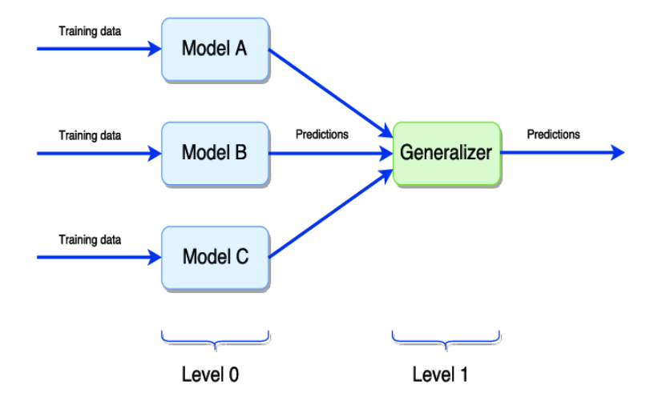

PREDIKSI JENIS KENDARAAN BERDASARKAN SILUET KENDARAAN#
Pendahuluan#
Data ini dikumpulkan di Texas Instruments dan didanai sebagian oleh Barr and Stroud Ltd. Tujuannya adalah untuk membedakan objek 3D dalam gambar 2D menggunakan fitur bentuk dari siluet 2D. Empat model kendaraan “Corgie” digunakan: bus tingkat, van Chevrolet, Saab 9000, dan Opel Manta 400. Kendaraan difoto dari sudut tetap dengan berbagai orientasi untuk menghasilkan dataset yang beragam.
Tujuan modul ini adalah mengklasifikasikan siluet kendaraan menjadi salah satu dari empat jenis kendaraan (bus, van, Saab 9000, dan Opel Manta 400) menggunakan fitur-fitur yang diekstraksi dari siluet.
Data Understanding#
Sumber Data#
Dataset Statlog (Vehicle Silhouettes) didapat dari UCI dataset (https://archive.ics.uci.edu/dataset/149/statlog+vehicle+silhouettes)
Statlog (Vehicle Silhouettes) adalah dataset Siluet Kendaraan yang diperoleh dari Texas Instruments dan didanai sebagian oleh Barr and Stroud Ltd
Siebert, J.P. (1987). Vehicle Recognition Using Rule Based Methods.
Integrasi Data#
Untuk mengambil data agar dapat diolah perlu untuk menginstall package yang telah disediakan oleh UCI Dataset. Instalasi dilakukan berguna untuk mengambil data yang berasal dari UCI dataset agar dapat diolah. Peritah untuk mengambil data dari UCI dataset dapat di lihat ketika kita menekan tombol import in python pada dataset yang diinginkan dan perlu mengikuti perintah tersebut agar data dapat diambil dari UCI dataset. Pengambilan data seperti berikut :
pip install ucimlrepo
Requirement already satisfied: ucimlrepo in c:\users\bagus\python\lib\site-packages (0.0.7)
Requirement already satisfied: pandas>=1.0.0 in c:\users\bagus\python\lib\site-packages (from ucimlrepo) (2.0.1)
Requirement already satisfied: certifi>=2020.12.5 in c:\users\bagus\python\lib\site-packages (from ucimlrepo) (2024.2.2)
Requirement already satisfied: python-dateutil>=2.8.2 in c:\users\bagus\python\lib\site-packages (from pandas>=1.0.0->ucimlrepo) (2.8.2)
Requirement already satisfied: pytz>=2020.1 in c:\users\bagus\python\lib\site-packages (from pandas>=1.0.0->ucimlrepo) (2023.3)
Requirement already satisfied: tzdata>=2022.1 in c:\users\bagus\python\lib\site-packages (from pandas>=1.0.0->ucimlrepo) (2023.3)
Requirement already satisfied: numpy>=1.21.0 in c:\users\bagus\python\lib\site-packages (from pandas>=1.0.0->ucimlrepo) (1.24.3)
Requirement already satisfied: six>=1.5 in c:\users\bagus\python\lib\site-packages (from python-dateutil>=2.8.2->pandas>=1.0.0->ucimlrepo) (1.16.0)
Note: you may need to restart the kernel to use updated packages.
[notice] A new release of pip is available: 23.3.1 -> 24.1
[notice] To update, run: python.exe -m pip install --upgrade pip
import pandas as pd
from ucimlrepo import fetch_ucirepo
from sklearn.preprocessing import LabelEncoder
# Fetch dataset
statlog_vehicle_silhouettes_original = fetch_ucirepo(id=149)
# Data (as pandas dataframes)
data = statlog_vehicle_silhouettes_original.data.original
# Menghapus baris yang memiliki nilai class 204
data = data[data['class'] != '204']
# Menyimpan hasil komputasi ke dalam CSV
data.to_csv("statlog_vehicle.csv", index=False)
Data akan disimpan dalam bentuk csv dengan nama statlog_vehicle.csv
Eksplorasi Data#
Visualisasi Data#
Untuk memudahkan dalam memahami dataset , ada baiknya ditampilkan dengan visual yang dapat dipahami oleh semua orang. Pada visualisasi data lakukan perintah berikut agar tampilan data dapat dipahami dengan lebih mudah.
display(data)
| COMPACTNESS | CIRCULARITY | DISTANCE CIRCULARITY | RADIUS RATIO | PR.AXIS ASPECT RATIO | MAX.LENGTH ASPECT RATIO | SCATTER RATIO | ELONGATEDNESS | PR.AXIS RECTANGULARITY | MAX.LENGTH RECTANGULARITY | SCALED VARIANCE ALONG MAJOR AXIS | SCALED VARIANCE ALONG MINOR AXIS | SCALED RADIUS OF GYRATION | SKEWNESS ABOUT MAJOR AXIS | SKEWNESS ABOUT MINOR AXIS | KURTOSIS ABOUT MINOR AXIS | KURTOSIS ABOUT MAJOR AXIS | HOLLOWS RATIO | class | |
|---|---|---|---|---|---|---|---|---|---|---|---|---|---|---|---|---|---|---|---|
| 0 | 95.0 | 48 | 83 | 178 | 72 | 10 | 162 | 42 | 20 | 159 | 176 | 379 | 184 | 70 | 6 | 16 | 187 | 197 | van |
| 1 | 91.0 | 41 | 84 | 141 | 57 | 9 | 149 | 45 | 19 | 143 | 170 | 330 | 158 | 72 | 9 | 14 | 189 | 199 | van |
| 2 | 104.0 | 50 | 106 | 209 | 66 | 10 | 207 | 32 | 23 | 158 | 223 | 635 | 220 | 73 | 14 | 9 | 188 | 196 | saab |
| 3 | 93.0 | 41 | 82 | 159 | 63 | 9 | 144 | 46 | 19 | 143 | 160 | 309 | 127 | 63 | 6 | 10 | 199 | 207 | van |
| 4 | 85.0 | 44 | 70 | 205 | 103 | 52 | 149 | 45 | 19 | 144 | 241 | 325 | 188 | 127 | 9 | 11 | 180 | 183 | bus |
| ... | ... | ... | ... | ... | ... | ... | ... | ... | ... | ... | ... | ... | ... | ... | ... | ... | ... | ... | ... |
| 841 | 93.0 | 39 | 87 | 183 | 64 | 8 | 169 | 40 | 20 | 134 | 200 | 422 | 149 | 72 | 7 | 25 | 188 | 195 | saab |
| 842 | 89.0 | 46 | 84 | 163 | 66 | 11 | 159 | 43 | 20 | 159 | 173 | 368 | 176 | 72 | 1 | 20 | 186 | 197 | van |
| 843 | 106.0 | 54 | 101 | 222 | 67 | 12 | 222 | 30 | 25 | 173 | 228 | 721 | 200 | 70 | 3 | 4 | 187 | 201 | saab |
| 844 | 86.0 | 36 | 78 | 146 | 58 | 7 | 135 | 50 | 18 | 124 | 155 | 270 | 148 | 66 | 0 | 25 | 190 | 195 | saab |
| 845 | 85.0 | 36 | 66 | 123 | 55 | 5 | 120 | 56 | 17 | 128 | 140 | 212 | 131 | 73 | 1 | 18 | 186 | 190 | van |
845 rows × 19 columns
import pandas as pd
import seaborn as sns
import matplotlib.pyplot as plt
plt.figure(figsize=(8, 6))
sns.countplot(x='class', data=data, palette='viridis')
plt.title('Jumlah Sampel per Kelas')
plt.xlabel('Kelas')
plt.ylabel('Jumlah Sampel')
plt.show()
---------------------------------------------------------------------------
ModuleNotFoundError Traceback (most recent call last)
Cell In[4], line 2
1 import pandas as pd
----> 2 import seaborn as sns
3 import matplotlib.pyplot as plt
4 plt.figure(figsize=(8, 6))
ModuleNotFoundError: No module named 'seaborn'
# Visualisasi distribusi fitur dengan histogram
plt.figure(figsize=(12, 10))
data.hist(bins=30, figsize=(15, 10), color='blue')
plt.suptitle('Distribusi Fitur')
plt.show()
<Figure size 1200x1000 with 0 Axes>
Struktur Dataset#
Fitur dan Label#
Fitur merupakan ciri-ciri yang digunakan untuk menentukan klasifikasi suatu data, pada dataset ini fitur yang ada akan berhubungan dan digunakan untuk mengidentifikasi apakah siluet kendaraan termasuk dalam jenis kendaraan bus, van, Saab 9000, dan Opel Manta 400.
Fitur pada dataset ada 18 :
COMPACTNESS: Rasio kuadrat keliling rata-rata terhadap luas. CIRCULARITY: Rasio kuadrat radius rata-rata terhadap luas. DISTANCE CIRCULARITY: Rasio luas terhadap kuadrat jarak rata-rata dari tepi. RADIUS RATIO: Rasio perbedaan radius maksimum dan minimum terhadap radius rata-rata. PR.AXIS ASPECT RATIO: Rasio sumbu minor terhadap sumbu mayor. MAX.LENGTH ASPECT RATIO: Rasio panjang tegak lurus terhadap panjang maksimum. SCATTER RATIO: Rasio inersia terhadap sumbu minor dan mayor. ELONGATEDNESS: Rasio luas terhadap kuadrat lebar yang menyusut. PR.AXIS RECTANGULARITY: Rasio luas terhadap panjang dan lebar sumbu utama. MAX.LENGTH RECTANGULARITY: Rasio luas terhadap panjang maksimum dan panjang tegak lurus. SCALED VARIANCE ALONG MAJOR AXIS: Variansi orde kedua terhadap luas pada sumbu mayor. SCALED VARIANCE ALONG MINOR AXIS: Variansi orde kedua terhadap luas pada sumbu minor. SCALED RADIUS OF GYRATION: Jumlah variansi mayor dan minor terhadap luas. SKEWNESS ABOUT MAJOR AXIS: Skewness orde ketiga terhadap kubus deviasi standar pada sumbu mayor. SKEWNESS ABOUT MINOR AXIS: Skewness orde ketiga terhadap kubus deviasi standar pada sumbu minor. KURTOSIS ABOUT MINOR AXIS: Kurtosis orde keempat terhadap pangkat empat deviasi standar pada sumbu minor. KURTOSIS ABOUT MAJOR AXIS: Kurtosis orde keempat terhadap pangkat empat deviasi standar pada sumbu mayor. HOLLOWS RATIO: Rasio luas rongga terhadap luas poligon pembatas.
Label pada dataset :
Data ini memiliki empat kelas atau jenis kendaraan:
OPEL SAAB BUS VAN
Struktur dataset perlu diketahui juga untuk mengelola data nantinya, perlu mengetahui apakah ada berapa data pada dataset, dan ada berapa fitur juga. Karena data dan fitur akan sangat berhubungan dengan model yang akan dibuat nantinya. Berikut cara untuk mengetahui struktur data dan penjelasannya.
data.shape #untuk mengetahui bentuk dataset(baris & kolom)
(845, 19)
data.columns #untuk mengetahui kolom-kolom yang ada pada dataset
Index(['COMPACTNESS', 'CIRCULARITY', 'DISTANCE CIRCULARITY', 'RADIUS RATIO',
'PR.AXIS ASPECT RATIO', 'MAX.LENGTH ASPECT RATIO', 'SCATTER RATIO',
'ELONGATEDNESS', 'PR.AXIS RECTANGULARITY', 'MAX.LENGTH RECTANGULARITY',
'SCALED VARIANCE ALONG MAJOR AXIS', 'SCALED VARIANCE ALONG MINOR AXIS',
'SCALED RADIUS OF GYRATION', 'SKEWNESS ABOUT MAJOR AXIS',
'SKEWNESS ABOUT MINOR AXIS', 'KURTOSIS ABOUT MINOR AXIS',
'KURTOSIS ABOUT MAJOR AXIS', 'HOLLOWS RATIO', 'class'],
dtype='object')
data.dtypes #untuk mengetahui tipe data dari masing-masing kolom
COMPACTNESS float64
CIRCULARITY int64
DISTANCE CIRCULARITY int64
RADIUS RATIO int64
PR.AXIS ASPECT RATIO int64
MAX.LENGTH ASPECT RATIO int64
SCATTER RATIO int64
ELONGATEDNESS int64
PR.AXIS RECTANGULARITY int64
MAX.LENGTH RECTANGULARITY int64
SCALED VARIANCE ALONG MAJOR AXIS int64
SCALED VARIANCE ALONG MINOR AXIS int64
SCALED RADIUS OF GYRATION int64
SKEWNESS ABOUT MAJOR AXIS int64
SKEWNESS ABOUT MINOR AXIS int64
KURTOSIS ABOUT MINOR AXIS int64
KURTOSIS ABOUT MAJOR AXIS int64
HOLLOWS RATIO int64
class object
dtype: object
data.groupby('class').size() #untuk mengetahui jumlah masing-masing class
class
bus 217
opel 212
saab 217
van 199
dtype: int64
Identifikasi Kualitas Data#
Pendeteksian Missing Values#
Missing value merupakan data yang hilang pada suatu dataset. Hal ini bisa terjadi oleh beberapa faktor, diantaranya adalah :
Interviewer recording error terjadi akibat kelalaian petugas pengumpul data (pewawancara), misalnya ada sejumlah pertanyaan yang terlewatkan
Respondent inability error terjadi akibat ketidakmampuan responden dalam memberikan jawaban akurat, misalnya karena tidak memahami pertanyaan, bosan atau kelelahan (respondent fatigue) akhirnya responden mengosongkan sejumlah pertanyaan atau berhenti mengisi kuesioner di tengah jalan.
Unwillingness respondent error terjadi karena responden tidak berkenan memberikan jawaban yang akurat, misalnya pertanyaan soal penghasilan, usia, berat badan, pengalaman melakukan pelanggaran hukum, dll.
Cara penanganan Missing Values :
Mengabaikan dan membuang missing data
Estimasi parameter
Imputasi
Dalam modul kali ini akan mengecek apakah ada missing value , jika ada akan ditangani menggunakan metode imputasi, yang ada 2 metode yaitu menggunakan metode Mean dan menggunakan metode KNN.
Dilakukan pendeteksian missing values terlebih dahulu pada masing-masing kolom.
import pandas as pd
# Detect rows with missing values
rows_with_missing = data[data.isnull().any(axis=1)]
# Tampilkan baris dengan nilai yang hilang beserta ID, fitur, dan labelnya
print("Rows with Missing Values:")
print(rows_with_missing)
# Detect missing values
missing_values = data.isnull()
# Hitung nilai yang hilang di setiap kolom
missing_counts = missing_values.sum()
# Display missing value counts
print("Missing Value Counts:")
print(missing_counts)
Rows with Missing Values:
Empty DataFrame
Columns: [COMPACTNESS, CIRCULARITY, DISTANCE CIRCULARITY, RADIUS RATIO, PR.AXIS ASPECT RATIO, MAX.LENGTH ASPECT RATIO, SCATTER RATIO, ELONGATEDNESS, PR.AXIS RECTANGULARITY, MAX.LENGTH RECTANGULARITY, SCALED VARIANCE ALONG MAJOR AXIS, SCALED VARIANCE ALONG MINOR AXIS, SCALED RADIUS OF GYRATION, SKEWNESS ABOUT MAJOR AXIS, SKEWNESS ABOUT MINOR AXIS, KURTOSIS ABOUT MINOR AXIS, KURTOSIS ABOUT MAJOR AXIS, HOLLOWS RATIO, class]
Index: []
Missing Value Counts:
COMPACTNESS 0
CIRCULARITY 0
DISTANCE CIRCULARITY 0
RADIUS RATIO 0
PR.AXIS ASPECT RATIO 0
MAX.LENGTH ASPECT RATIO 0
SCATTER RATIO 0
ELONGATEDNESS 0
PR.AXIS RECTANGULARITY 0
MAX.LENGTH RECTANGULARITY 0
SCALED VARIANCE ALONG MAJOR AXIS 0
SCALED VARIANCE ALONG MINOR AXIS 0
SCALED RADIUS OF GYRATION 0
SKEWNESS ABOUT MAJOR AXIS 0
SKEWNESS ABOUT MINOR AXIS 0
KURTOSIS ABOUT MINOR AXIS 0
KURTOSIS ABOUT MAJOR AXIS 0
HOLLOWS RATIO 0
class 0
dtype: int64
Dari pendeteksian missing values tersebut tidak ditemukan adanya missing values, sehingga tidak diperlukan penanganan seperti imputasi menggunakan mean atau KNN.
Pendeteksian Outlier#
Outlier/pencilan merupakan data pada dataset yang menyimpang dari data lainnya,mendeteksi outlier perlu agar data yang kita olah memberikan hasil yang baik pada model yang akan kita buat nantinya.outlier dapat diidentifikasi dan ditangani dengan beberapa cara antara lain yang akan kami gunakan yaitu LOF(Local Outlier Factor).
Konsep Local Outlier Factor#
Outlier adalah titik data yang berbeda atau jauh dari titik data lainnya. Local Outlier Factor (LOF) adalah algoritma yang mengidentifikasi outlier yang ada dalam kumpulan data. Ketika suatu titik dianggap sebagai outlier berdasarkan lingkungan lokalnya, maka titik tersebut disebut local outlier . LOF akan mengidentifikasi outlier dengan mempertimbangkan kepadatan lingkungan. LOF bekerja dengan baik ketika kepadatan data tidak sama di seluruh kumpulan data.
Implementasi Local Outlier Factor dengan Scikit Learn#
sedangkan untuk perhitungan melalui code sebagai berikut :
from sklearn.neighbors import LocalOutlierFactor
from sklearn.metrics import precision_score
import matplotlib.pyplot as plt
# Membuat model LOF
lof = LocalOutlierFactor(n_neighbors=9, contamination=0.03)
data1 = data
data1 = data1.drop(columns=data1.columns[-1])
# Melakukan prediksi outlier untuk setiap fitur
outlier_indices = []
for column in data1.columns:
# Mengambil nilai fitur
feature_values = data1[column].values.reshape(-1, 1)
# Melakukan prediksi outlier
y_pred = lof.fit_predict(feature_values)
# Menambahkan indeks outlier ke dalam daftar outlier_indices
outlier_indices.extend([(i, column) for i, label in enumerate(y_pred) if label == -1])
# Menghilangkan indeks outlier yang duplikat
outlier_indices = list(set(outlier_indices))
# Menampilkan outlier untuk setiap fitur
# for column in data1.columns:
# plt.scatter(range(len(data1[column])), data1[column], label=column)
# plt.scatter(outlier_indices, data1[column].iloc[outlier_indices], color='r', label="Outlier")
# plt.xlabel("Index")
# plt.ylabel(column)
# plt.title(f"Outlier Detection for {column}")
# plt.legend()
# plt.show()
# Menampilkan indeks outlier yang ditemukan
print("===================================== OUTLIER =====================================")
for i in outlier_indices:
print(f"outlier ditemukan pada baris => {i[0]}, kolom => {i[1]}")
# Mengumpulkan indeks baris yang mengandung outlier
outlier_row_indices = [index[0] for index in outlier_indices]
# Menampilkan data pada baris yang mengandung outlier
outlier_data = data.iloc[outlier_row_indices]
print("===================================== DATA =====================================")
print("Data pada baris yang mengandung outlier:")
print(outlier_data)
# Mengasumsikan Anda memiliki labels outlier yang sesuai dengan indeks outlier yang Anda temukan
# Misalnya, dalam list ini, nilai 1 menunjukkan outlier, dan 0 menunjukkan bukan outlier
ground_truth_labels = [1 if i in outlier_row_indices else 0 for i in range(len(data))]
# Menghasilkan prediksi outlier berdasarkan outlier_row_indices
predicted_labels = [1 if i in outlier_row_indices else 0 for i in range(len(data))]
# Menghitung akurasi
precision = precision_score(ground_truth_labels, predicted_labels)
print("==================================== AKURASI ====================================")
print(f"akurasi: {precision}")
===================================== OUTLIER =====================================
outlier ditemukan pada baris => 283, kolom => DISTANCE CIRCULARITY
outlier ditemukan pada baris => 294, kolom => DISTANCE CIRCULARITY
outlier ditemukan pada baris => 167, kolom => SKEWNESS ABOUT MINOR AXIS
outlier ditemukan pada baris => 531, kolom => KURTOSIS ABOUT MINOR AXIS
outlier ditemukan pada baris => 675, kolom => SCALED VARIANCE ALONG MAJOR AXIS
outlier ditemukan pada baris => 135, kolom => SKEWNESS ABOUT MAJOR AXIS
outlier ditemukan pada baris => 283, kolom => COMPACTNESS
outlier ditemukan pada baris => 531, kolom => ELONGATEDNESS
outlier ditemukan pada baris => 564, kolom => MAX.LENGTH RECTANGULARITY
outlier ditemukan pada baris => 469, kolom => KURTOSIS ABOUT MAJOR AXIS
outlier ditemukan pada baris => 573, kolom => SCALED VARIANCE ALONG MINOR AXIS
outlier ditemukan pada baris => 396, kolom => HOLLOWS RATIO
outlier ditemukan pada baris => 226, kolom => RADIUS RATIO
outlier ditemukan pada baris => 249, kolom => CIRCULARITY
outlier ditemukan pada baris => 73, kolom => COMPACTNESS
outlier ditemukan pada baris => 272, kolom => KURTOSIS ABOUT MINOR AXIS
outlier ditemukan pada baris => 499, kolom => MAX.LENGTH RECTANGULARITY
outlier ditemukan pada baris => 586, kolom => RADIUS RATIO
outlier ditemukan pada baris => 523, kolom => SKEWNESS ABOUT MAJOR AXIS
outlier ditemukan pada baris => 220, kolom => MAX.LENGTH ASPECT RATIO
outlier ditemukan pada baris => 643, kolom => RADIUS RATIO
outlier ditemukan pada baris => 334, kolom => PR.AXIS RECTANGULARITY
outlier ditemukan pada baris => 345, kolom => PR.AXIS RECTANGULARITY
outlier ditemukan pada baris => 675, kolom => CIRCULARITY
outlier ditemukan pada baris => 439, kolom => MAX.LENGTH RECTANGULARITY
outlier ditemukan pada baris => 543, kolom => SCALED VARIANCE ALONG MINOR AXIS
outlier ditemukan pada baris => 429, kolom => SCATTER RATIO
outlier ditemukan pada baris => 556, kolom => DISTANCE CIRCULARITY
outlier ditemukan pada baris => 267, kolom => MAX.LENGTH RECTANGULARITY
outlier ditemukan pada baris => 93, kolom => DISTANCE CIRCULARITY
outlier ditemukan pada baris => 291, kolom => SKEWNESS ABOUT MAJOR AXIS
outlier ditemukan pada baris => 678, kolom => SKEWNESS ABOUT MAJOR AXIS
outlier ditemukan pada baris => 728, kolom => KURTOSIS ABOUT MINOR AXIS
outlier ditemukan pada baris => 776, kolom => PR.AXIS ASPECT RATIO
outlier ditemukan pada baris => 185, kolom => SCALED VARIANCE ALONG MAJOR AXIS
outlier ditemukan pada baris => 565, kolom => HOLLOWS RATIO
outlier ditemukan pada baris => 113, kolom => SKEWNESS ABOUT MINOR AXIS
outlier ditemukan pada baris => 385, kolom => DISTANCE CIRCULARITY
outlier ditemukan pada baris => 203, kolom => SCALED RADIUS OF GYRATION
outlier ditemukan pada baris => 337, kolom => SCALED RADIUS OF GYRATION
outlier ditemukan pada baris => 541, kolom => CIRCULARITY
outlier ditemukan pada baris => 112, kolom => COMPACTNESS
outlier ditemukan pada baris => 4, kolom => PR.AXIS ASPECT RATIO
outlier ditemukan pada baris => 529, kolom => DISTANCE CIRCULARITY
outlier ditemukan pada baris => 636, kolom => KURTOSIS ABOUT MAJOR AXIS
outlier ditemukan pada baris => 381, kolom => SKEWNESS ABOUT MAJOR AXIS
outlier ditemukan pada baris => 732, kolom => SCATTER RATIO
outlier ditemukan pada baris => 344, kolom => SCALED VARIANCE ALONG MINOR AXIS
outlier ditemukan pada baris => 346, kolom => DISTANCE CIRCULARITY
outlier ditemukan pada baris => 100, kolom => PR.AXIS ASPECT RATIO
outlier ditemukan pada baris => 5, kolom => PR.AXIS ASPECT RATIO
outlier ditemukan pada baris => 594, kolom => SKEWNESS ABOUT MAJOR AXIS
outlier ditemukan pada baris => 730, kolom => KURTOSIS ABOUT MINOR AXIS
outlier ditemukan pada baris => 346, kolom => COMPACTNESS
outlier ditemukan pada baris => 62, kolom => PR.AXIS ASPECT RATIO
outlier ditemukan pada baris => 438, kolom => SCALED VARIANCE ALONG MAJOR AXIS
outlier ditemukan pada baris => 444, kolom => PR.AXIS RECTANGULARITY
outlier ditemukan pada baris => 54, kolom => KURTOSIS ABOUT MINOR AXIS
outlier ditemukan pada baris => 193, kolom => PR.AXIS RECTANGULARITY
outlier ditemukan pada baris => 294, kolom => SKEWNESS ABOUT MAJOR AXIS
outlier ditemukan pada baris => 332, kolom => SCALED VARIANCE ALONG MAJOR AXIS
outlier ditemukan pada baris => 615, kolom => HOLLOWS RATIO
outlier ditemukan pada baris => 586, kolom => KURTOSIS ABOUT MINOR AXIS
outlier ditemukan pada baris => 434, kolom => RADIUS RATIO
outlier ditemukan pada baris => 636, kolom => SCATTER RATIO
outlier ditemukan pada baris => 734, kolom => KURTOSIS ABOUT MAJOR AXIS
outlier ditemukan pada baris => 693, kolom => SCALED VARIANCE ALONG MINOR AXIS
outlier ditemukan pada baris => 389, kolom => SCALED VARIANCE ALONG MAJOR AXIS
outlier ditemukan pada baris => 100, kolom => SKEWNESS ABOUT MAJOR AXIS
outlier ditemukan pada baris => 509, kolom => KURTOSIS ABOUT MINOR AXIS
outlier ditemukan pada baris => 706, kolom => MAX.LENGTH ASPECT RATIO
outlier ditemukan pada baris => 840, kolom => DISTANCE CIRCULARITY
outlier ditemukan pada baris => 152, kolom => KURTOSIS ABOUT MINOR AXIS
outlier ditemukan pada baris => 419, kolom => CIRCULARITY
outlier ditemukan pada baris => 213, kolom => RADIUS RATIO
outlier ditemukan pada baris => 614, kolom => ELONGATEDNESS
outlier ditemukan pada baris => 123, kolom => ELONGATEDNESS
outlier ditemukan pada baris => 551, kolom => COMPACTNESS
outlier ditemukan pada baris => 145, kolom => MAX.LENGTH RECTANGULARITY
outlier ditemukan pada baris => 612, kolom => CIRCULARITY
outlier ditemukan pada baris => 442, kolom => ELONGATEDNESS
outlier ditemukan pada baris => 146, kolom => SKEWNESS ABOUT MINOR AXIS
outlier ditemukan pada baris => 609, kolom => KURTOSIS ABOUT MAJOR AXIS
outlier ditemukan pada baris => 347, kolom => KURTOSIS ABOUT MAJOR AXIS
outlier ditemukan pada baris => 456, kolom => RADIUS RATIO
outlier ditemukan pada baris => 219, kolom => ELONGATEDNESS
outlier ditemukan pada baris => 431, kolom => SCALED VARIANCE ALONG MAJOR AXIS
outlier ditemukan pada baris => 789, kolom => HOLLOWS RATIO
outlier ditemukan pada baris => 69, kolom => MAX.LENGTH RECTANGULARITY
outlier ditemukan pada baris => 776, kolom => PR.AXIS RECTANGULARITY
outlier ditemukan pada baris => 37, kolom => PR.AXIS ASPECT RATIO
outlier ditemukan pada baris => 249, kolom => ELONGATEDNESS
outlier ditemukan pada baris => 160, kolom => SCALED RADIUS OF GYRATION
outlier ditemukan pada baris => 171, kolom => PR.AXIS ASPECT RATIO
outlier ditemukan pada baris => 235, kolom => RADIUS RATIO
outlier ditemukan pada baris => 615, kolom => CIRCULARITY
outlier ditemukan pada baris => 570, kolom => KURTOSIS ABOUT MINOR AXIS
outlier ditemukan pada baris => 654, kolom => SKEWNESS ABOUT MAJOR AXIS
outlier ditemukan pada baris => 562, kolom => COMPACTNESS
outlier ditemukan pada baris => 217, kolom => SCALED RADIUS OF GYRATION
outlier ditemukan pada baris => 843, kolom => MAX.LENGTH RECTANGULARITY
outlier ditemukan pada baris => 164, kolom => KURTOSIS ABOUT MINOR AXIS
outlier ditemukan pada baris => 58, kolom => SCATTER RATIO
outlier ditemukan pada baris => 783, kolom => ELONGATEDNESS
outlier ditemukan pada baris => 794, kolom => KURTOSIS ABOUT MAJOR AXIS
outlier ditemukan pada baris => 84, kolom => PR.AXIS ASPECT RATIO
outlier ditemukan pada baris => 592, kolom => COMPACTNESS
outlier ditemukan pada baris => 689, kolom => SKEWNESS ABOUT MINOR AXIS
outlier ditemukan pada baris => 494, kolom => ELONGATEDNESS
outlier ditemukan pada baris => 516, kolom => KURTOSIS ABOUT MAJOR AXIS
outlier ditemukan pada baris => 294, kolom => PR.AXIS RECTANGULARITY
outlier ditemukan pada baris => 14, kolom => MAX.LENGTH RECTANGULARITY
outlier ditemukan pada baris => 554, kolom => COMPACTNESS
outlier ditemukan pada baris => 255, kolom => SKEWNESS ABOUT MINOR AXIS
outlier ditemukan pada baris => 796, kolom => SKEWNESS ABOUT MINOR AXIS
outlier ditemukan pada baris => 400, kolom => SKEWNESS ABOUT MINOR AXIS
outlier ditemukan pada baris => 183, kolom => ELONGATEDNESS
outlier ditemukan pada baris => 523, kolom => PR.AXIS ASPECT RATIO
outlier ditemukan pada baris => 11, kolom => KURTOSIS ABOUT MINOR AXIS
outlier ditemukan pada baris => 505, kolom => COMPACTNESS
outlier ditemukan pada baris => 661, kolom => COMPACTNESS
outlier ditemukan pada baris => 718, kolom => DISTANCE CIRCULARITY
outlier ditemukan pada baris => 809, kolom => SCALED RADIUS OF GYRATION
outlier ditemukan pada baris => 262, kolom => ELONGATEDNESS
outlier ditemukan pada baris => 558, kolom => SCALED RADIUS OF GYRATION
outlier ditemukan pada baris => 514, kolom => SCATTER RATIO
outlier ditemukan pada baris => 33, kolom => MAX.LENGTH RECTANGULARITY
outlier ditemukan pada baris => 23, kolom => SCATTER RATIO
outlier ditemukan pada baris => 701, kolom => RADIUS RATIO
outlier ditemukan pada baris => 291, kolom => PR.AXIS ASPECT RATIO
outlier ditemukan pada baris => 44, kolom => COMPACTNESS
outlier ditemukan pada baris => 167, kolom => COMPACTNESS
outlier ditemukan pada baris => 615, kolom => KURTOSIS ABOUT MAJOR AXIS
outlier ditemukan pada baris => 422, kolom => CIRCULARITY
outlier ditemukan pada baris => 638, kolom => PR.AXIS ASPECT RATIO
outlier ditemukan pada baris => 494, kolom => SKEWNESS ABOUT MAJOR AXIS
outlier ditemukan pada baris => 556, kolom => PR.AXIS RECTANGULARITY
outlier ditemukan pada baris => 186, kolom => SCALED VARIANCE ALONG MINOR AXIS
outlier ditemukan pada baris => 706, kolom => PR.AXIS ASPECT RATIO
outlier ditemukan pada baris => 53, kolom => KURTOSIS ABOUT MAJOR AXIS
outlier ditemukan pada baris => 634, kolom => KURTOSIS ABOUT MAJOR AXIS
outlier ditemukan pada baris => 576, kolom => RADIUS RATIO
outlier ditemukan pada baris => 679, kolom => PR.AXIS ASPECT RATIO
outlier ditemukan pada baris => 839, kolom => CIRCULARITY
outlier ditemukan pada baris => 808, kolom => COMPACTNESS
outlier ditemukan pada baris => 760, kolom => SKEWNESS ABOUT MINOR AXIS
outlier ditemukan pada baris => 390, kolom => PR.AXIS ASPECT RATIO
outlier ditemukan pada baris => 622, kolom => KURTOSIS ABOUT MINOR AXIS
outlier ditemukan pada baris => 706, kolom => SKEWNESS ABOUT MAJOR AXIS
outlier ditemukan pada baris => 745, kolom => SKEWNESS ABOUT MAJOR AXIS
outlier ditemukan pada baris => 104, kolom => RADIUS RATIO
outlier ditemukan pada baris => 539, kolom => PR.AXIS RECTANGULARITY
outlier ditemukan pada baris => 79, kolom => PR.AXIS ASPECT RATIO
outlier ditemukan pada baris => 166, kolom => SKEWNESS ABOUT MAJOR AXIS
outlier ditemukan pada baris => 181, kolom => KURTOSIS ABOUT MAJOR AXIS
outlier ditemukan pada baris => 181, kolom => MAX.LENGTH RECTANGULARITY
outlier ditemukan pada baris => 655, kolom => MAX.LENGTH ASPECT RATIO
outlier ditemukan pada baris => 85, kolom => COMPACTNESS
outlier ditemukan pada baris => 751, kolom => MAX.LENGTH RECTANGULARITY
outlier ditemukan pada baris => 612, kolom => ELONGATEDNESS
outlier ditemukan pada baris => 710, kolom => SCALED VARIANCE ALONG MINOR AXIS
outlier ditemukan pada baris => 534, kolom => PR.AXIS ASPECT RATIO
outlier ditemukan pada baris => 65, kolom => SKEWNESS ABOUT MINOR AXIS
outlier ditemukan pada baris => 394, kolom => MAX.LENGTH RECTANGULARITY
outlier ditemukan pada baris => 671, kolom => KURTOSIS ABOUT MINOR AXIS
outlier ditemukan pada baris => 683, kolom => COMPACTNESS
outlier ditemukan pada baris => 816, kolom => KURTOSIS ABOUT MINOR AXIS
outlier ditemukan pada baris => 326, kolom => KURTOSIS ABOUT MAJOR AXIS
outlier ditemukan pada baris => 831, kolom => SCALED RADIUS OF GYRATION
outlier ditemukan pada baris => 547, kolom => SCATTER RATIO
outlier ditemukan pada baris => 79, kolom => SKEWNESS ABOUT MAJOR AXIS
outlier ditemukan pada baris => 346, kolom => SKEWNESS ABOUT MINOR AXIS
outlier ditemukan pada baris => 710, kolom => ELONGATEDNESS
outlier ditemukan pada baris => 844, kolom => ELONGATEDNESS
outlier ditemukan pada baris => 637, kolom => KURTOSIS ABOUT MAJOR AXIS
outlier ditemukan pada baris => 614, kolom => KURTOSIS ABOUT MINOR AXIS
outlier ditemukan pada baris => 664, kolom => SCATTER RATIO
outlier ditemukan pada baris => 705, kolom => DISTANCE CIRCULARITY
outlier ditemukan pada baris => 338, kolom => SKEWNESS ABOUT MINOR AXIS
outlier ditemukan pada baris => 478, kolom => SCALED VARIANCE ALONG MAJOR AXIS
outlier ditemukan pada baris => 180, kolom => KURTOSIS ABOUT MINOR AXIS
outlier ditemukan pada baris => 388, kolom => MAX.LENGTH ASPECT RATIO
outlier ditemukan pada baris => 626, kolom => SCATTER RATIO
outlier ditemukan pada baris => 500, kolom => SCALED VARIANCE ALONG MINOR AXIS
outlier ditemukan pada baris => 544, kolom => MAX.LENGTH ASPECT RATIO
outlier ditemukan pada baris => 124, kolom => SCATTER RATIO
outlier ditemukan pada baris => 834, kolom => CIRCULARITY
outlier ditemukan pada baris => 620, kolom => MAX.LENGTH RECTANGULARITY
outlier ditemukan pada baris => 189, kolom => SCALED VARIANCE ALONG MAJOR AXIS
outlier ditemukan pada baris => 702, kolom => SCALED VARIANCE ALONG MINOR AXIS
outlier ditemukan pada baris => 142, kolom => KURTOSIS ABOUT MINOR AXIS
outlier ditemukan pada baris => 298, kolom => KURTOSIS ABOUT MINOR AXIS
outlier ditemukan pada baris => 703, kolom => HOLLOWS RATIO
outlier ditemukan pada baris => 533, kolom => RADIUS RATIO
outlier ditemukan pada baris => 271, kolom => RADIUS RATIO
outlier ditemukan pada baris => 89, kolom => KURTOSIS ABOUT MAJOR AXIS
outlier ditemukan pada baris => 683, kolom => ELONGATEDNESS
outlier ditemukan pada baris => 416, kolom => SCATTER RATIO
outlier ditemukan pada baris => 675, kolom => SCALED VARIANCE ALONG MINOR AXIS
outlier ditemukan pada baris => 350, kolom => RADIUS RATIO
outlier ditemukan pada baris => 113, kolom => ELONGATEDNESS
outlier ditemukan pada baris => 654, kolom => HOLLOWS RATIO
outlier ditemukan pada baris => 99, kolom => RADIUS RATIO
outlier ditemukan pada baris => 152, kolom => HOLLOWS RATIO
outlier ditemukan pada baris => 512, kolom => SCATTER RATIO
outlier ditemukan pada baris => 375, kolom => SCALED VARIANCE ALONG MINOR AXIS
outlier ditemukan pada baris => 120, kolom => SCALED RADIUS OF GYRATION
outlier ditemukan pada baris => 652, kolom => SCALED VARIANCE ALONG MAJOR AXIS
outlier ditemukan pada baris => 231, kolom => SCALED VARIANCE ALONG MINOR AXIS
outlier ditemukan pada baris => 612, kolom => MAX.LENGTH ASPECT RATIO
outlier ditemukan pada baris => 506, kolom => DISTANCE CIRCULARITY
outlier ditemukan pada baris => 591, kolom => MAX.LENGTH RECTANGULARITY
outlier ditemukan pada baris => 526, kolom => SCALED RADIUS OF GYRATION
outlier ditemukan pada baris => 375, kolom => ELONGATEDNESS
outlier ditemukan pada baris => 4, kolom => MAX.LENGTH ASPECT RATIO
outlier ditemukan pada baris => 202, kolom => PR.AXIS ASPECT RATIO
outlier ditemukan pada baris => 47, kolom => SKEWNESS ABOUT MAJOR AXIS
outlier ditemukan pada baris => 61, kolom => COMPACTNESS
outlier ditemukan pada baris => 391, kolom => MAX.LENGTH ASPECT RATIO
outlier ditemukan pada baris => 727, kolom => KURTOSIS ABOUT MAJOR AXIS
outlier ditemukan pada baris => 513, kolom => KURTOSIS ABOUT MINOR AXIS
outlier ditemukan pada baris => 231, kolom => ELONGATEDNESS
outlier ditemukan pada baris => 515, kolom => KURTOSIS ABOUT MAJOR AXIS
outlier ditemukan pada baris => 67, kolom => SCALED VARIANCE ALONG MINOR AXIS
outlier ditemukan pada baris => 792, kolom => KURTOSIS ABOUT MINOR AXIS
outlier ditemukan pada baris => 498, kolom => MAX.LENGTH ASPECT RATIO
outlier ditemukan pada baris => 701, kolom => SCALED RADIUS OF GYRATION
outlier ditemukan pada baris => 505, kolom => SKEWNESS ABOUT MINOR AXIS
outlier ditemukan pada baris => 516, kolom => SKEWNESS ABOUT MINOR AXIS
outlier ditemukan pada baris => 835, kolom => SCALED RADIUS OF GYRATION
outlier ditemukan pada baris => 494, kolom => PR.AXIS ASPECT RATIO
outlier ditemukan pada baris => 594, kolom => KURTOSIS ABOUT MAJOR AXIS
outlier ditemukan pada baris => 193, kolom => ELONGATEDNESS
outlier ditemukan pada baris => 825, kolom => MAX.LENGTH RECTANGULARITY
outlier ditemukan pada baris => 42, kolom => DISTANCE CIRCULARITY
outlier ditemukan pada baris => 267, kolom => SCALED RADIUS OF GYRATION
outlier ditemukan pada baris => 160, kolom => KURTOSIS ABOUT MAJOR AXIS
outlier ditemukan pada baris => 473, kolom => SCALED VARIANCE ALONG MAJOR AXIS
outlier ditemukan pada baris => 655, kolom => SKEWNESS ABOUT MAJOR AXIS
outlier ditemukan pada baris => 255, kolom => DISTANCE CIRCULARITY
outlier ditemukan pada baris => 318, kolom => ELONGATEDNESS
outlier ditemukan pada baris => 230, kolom => SKEWNESS ABOUT MAJOR AXIS
outlier ditemukan pada baris => 85, kolom => CIRCULARITY
outlier ditemukan pada baris => 39, kolom => PR.AXIS ASPECT RATIO
outlier ditemukan pada baris => 449, kolom => SCATTER RATIO
outlier ditemukan pada baris => 787, kolom => COMPACTNESS
outlier ditemukan pada baris => 81, kolom => SCATTER RATIO
outlier ditemukan pada baris => 564, kolom => KURTOSIS ABOUT MAJOR AXIS
outlier ditemukan pada baris => 620, kolom => PR.AXIS ASPECT RATIO
outlier ditemukan pada baris => 73, kolom => KURTOSIS ABOUT MAJOR AXIS
outlier ditemukan pada baris => 241, kolom => SCALED VARIANCE ALONG MAJOR AXIS
outlier ditemukan pada baris => 815, kolom => SCALED VARIANCE ALONG MINOR AXIS
outlier ditemukan pada baris => 149, kolom => SCATTER RATIO
outlier ditemukan pada baris => 419, kolom => SCALED VARIANCE ALONG MINOR AXIS
outlier ditemukan pada baris => 730, kolom => RADIUS RATIO
outlier ditemukan pada baris => 537, kolom => KURTOSIS ABOUT MAJOR AXIS
outlier ditemukan pada baris => 175, kolom => PR.AXIS ASPECT RATIO
outlier ditemukan pada baris => 711, kolom => DISTANCE CIRCULARITY
outlier ditemukan pada baris => 563, kolom => KURTOSIS ABOUT MINOR AXIS
outlier ditemukan pada baris => 476, kolom => SCALED VARIANCE ALONG MINOR AXIS
outlier ditemukan pada baris => 411, kolom => KURTOSIS ABOUT MAJOR AXIS
outlier ditemukan pada baris => 411, kolom => MAX.LENGTH RECTANGULARITY
outlier ditemukan pada baris => 731, kolom => PR.AXIS RECTANGULARITY
outlier ditemukan pada baris => 388, kolom => PR.AXIS ASPECT RATIO
outlier ditemukan pada baris => 372, kolom => DISTANCE CIRCULARITY
outlier ditemukan pada baris => 190, kolom => RADIUS RATIO
outlier ditemukan pada baris => 834, kolom => SCALED VARIANCE ALONG MINOR AXIS
outlier ditemukan pada baris => 179, kolom => SCATTER RATIO
outlier ditemukan pada baris => 490, kolom => MAX.LENGTH RECTANGULARITY
outlier ditemukan pada baris => 334, kolom => DISTANCE CIRCULARITY
outlier ditemukan pada baris => 704, kolom => SCALED RADIUS OF GYRATION
outlier ditemukan pada baris => 123, kolom => SKEWNESS ABOUT MINOR AXIS
outlier ditemukan pada baris => 259, kolom => CIRCULARITY
outlier ditemukan pada baris => 389, kolom => SCALED VARIANCE ALONG MINOR AXIS
outlier ditemukan pada baris => 8, kolom => CIRCULARITY
outlier ditemukan pada baris => 37, kolom => MAX.LENGTH ASPECT RATIO
outlier ditemukan pada baris => 83, kolom => COMPACTNESS
outlier ditemukan pada baris => 239, kolom => COMPACTNESS
outlier ditemukan pada baris => 209, kolom => RADIUS RATIO
outlier ditemukan pada baris => 381, kolom => ELONGATEDNESS
outlier ditemukan pada baris => 388, kolom => SKEWNESS ABOUT MAJOR AXIS
outlier ditemukan pada baris => 152, kolom => MAX.LENGTH RECTANGULARITY
outlier ditemukan pada baris => 230, kolom => MAX.LENGTH ASPECT RATIO
outlier ditemukan pada baris => 669, kolom => SKEWNESS ABOUT MAJOR AXIS
outlier ditemukan pada baris => 135, kolom => MAX.LENGTH ASPECT RATIO
outlier ditemukan pada baris => 471, kolom => MAX.LENGTH RECTANGULARITY
outlier ditemukan pada baris => 617, kolom => SCALED RADIUS OF GYRATION
outlier ditemukan pada baris => 221, kolom => SCALED RADIUS OF GYRATION
outlier ditemukan pada baris => 760, kolom => COMPACTNESS
outlier ditemukan pada baris => 324, kolom => SCALED VARIANCE ALONG MINOR AXIS
outlier ditemukan pada baris => 188, kolom => SCATTER RATIO
outlier ditemukan pada baris => 62, kolom => SCALED VARIANCE ALONG MINOR AXIS
outlier ditemukan pada baris => 814, kolom => SKEWNESS ABOUT MAJOR AXIS
outlier ditemukan pada baris => 231, kolom => MAX.LENGTH ASPECT RATIO
outlier ditemukan pada baris => 251, kolom => CIRCULARITY
outlier ditemukan pada baris => 690, kolom => HOLLOWS RATIO
outlier ditemukan pada baris => 422, kolom => MAX.LENGTH RECTANGULARITY
outlier ditemukan pada baris => 294, kolom => ELONGATEDNESS
outlier ditemukan pada baris => 11, kolom => CIRCULARITY
outlier ditemukan pada baris => 301, kolom => SCALED VARIANCE ALONG MAJOR AXIS
outlier ditemukan pada baris => 523, kolom => MAX.LENGTH ASPECT RATIO
outlier ditemukan pada baris => 127, kolom => MAX.LENGTH ASPECT RATIO
outlier ditemukan pada baris => 469, kolom => HOLLOWS RATIO
outlier ditemukan pada baris => 246, kolom => PR.AXIS ASPECT RATIO
outlier ditemukan pada baris => 778, kolom => PR.AXIS ASPECT RATIO
outlier ditemukan pada baris => 132, kolom => KURTOSIS ABOUT MINOR AXIS
outlier ditemukan pada baris => 441, kolom => SCALED VARIANCE ALONG MINOR AXIS
outlier ditemukan pada baris => 586, kolom => SCALED VARIANCE ALONG MINOR AXIS
outlier ditemukan pada baris => 367, kolom => RADIUS RATIO
outlier ditemukan pada baris => 733, kolom => DISTANCE CIRCULARITY
outlier ditemukan pada baris => 705, kolom => COMPACTNESS
outlier ditemukan pada baris => 654, kolom => SCALED VARIANCE ALONG MINOR AXIS
outlier ditemukan pada baris => 83, kolom => KURTOSIS ABOUT MINOR AXIS
outlier ditemukan pada baris => 291, kolom => MAX.LENGTH ASPECT RATIO
outlier ditemukan pada baris => 361, kolom => SCALED VARIANCE ALONG MAJOR AXIS
outlier ditemukan pada baris => 733, kolom => COMPACTNESS
outlier ditemukan pada baris => 4, kolom => SKEWNESS ABOUT MAJOR AXIS
outlier ditemukan pada baris => 546, kolom => PR.AXIS ASPECT RATIO
outlier ditemukan pada baris => 512, kolom => MAX.LENGTH RECTANGULARITY
outlier ditemukan pada baris => 667, kolom => COMPACTNESS
outlier ditemukan pada baris => 140, kolom => SKEWNESS ABOUT MAJOR AXIS
outlier ditemukan pada baris => 367, kolom => DISTANCE CIRCULARITY
outlier ditemukan pada baris => 814, kolom => MAX.LENGTH ASPECT RATIO
outlier ditemukan pada baris => 498, kolom => SKEWNESS ABOUT MAJOR AXIS
outlier ditemukan pada baris => 50, kolom => SCALED RADIUS OF GYRATION
outlier ditemukan pada baris => 521, kolom => SCATTER RATIO
outlier ditemukan pada baris => 540, kolom => SCALED VARIANCE ALONG MINOR AXIS
outlier ditemukan pada baris => 589, kolom => SCATTER RATIO
outlier ditemukan pada baris => 71, kolom => CIRCULARITY
outlier ditemukan pada baris => 103, kolom => ELONGATEDNESS
outlier ditemukan pada baris => 411, kolom => SKEWNESS ABOUT MAJOR AXIS
outlier ditemukan pada baris => 476, kolom => MAX.LENGTH ASPECT RATIO
outlier ditemukan pada baris => 64, kolom => SCALED VARIANCE ALONG MAJOR AXIS
outlier ditemukan pada baris => 413, kolom => KURTOSIS ABOUT MINOR AXIS
outlier ditemukan pada baris => 242, kolom => DISTANCE CIRCULARITY
outlier ditemukan pada baris => 171, kolom => ELONGATEDNESS
outlier ditemukan pada baris => 780, kolom => HOLLOWS RATIO
outlier ditemukan pada baris => 440, kolom => SCALED RADIUS OF GYRATION
outlier ditemukan pada baris => 259, kolom => SCALED VARIANCE ALONG MINOR AXIS
outlier ditemukan pada baris => 337, kolom => KURTOSIS ABOUT MINOR AXIS
outlier ditemukan pada baris => 589, kolom => SCALED VARIANCE ALONG MINOR AXIS
outlier ditemukan pada baris => 224, kolom => SCATTER RATIO
outlier ditemukan pada baris => 725, kolom => SCALED VARIANCE ALONG MINOR AXIS
outlier ditemukan pada baris => 155, kolom => COMPACTNESS
outlier ditemukan pada baris => 100, kolom => MAX.LENGTH ASPECT RATIO
outlier ditemukan pada baris => 135, kolom => PR.AXIS ASPECT RATIO
outlier ditemukan pada baris => 826, kolom => MAX.LENGTH ASPECT RATIO
outlier ditemukan pada baris => 834, kolom => MAX.LENGTH RECTANGULARITY
outlier ditemukan pada baris => 660, kolom => KURTOSIS ABOUT MAJOR AXIS
outlier ditemukan pada baris => 515, kolom => COMPACTNESS
outlier ditemukan pada baris => 37, kolom => SKEWNESS ABOUT MAJOR AXIS
outlier ditemukan pada baris => 572, kolom => DISTANCE CIRCULARITY
outlier ditemukan pada baris => 594, kolom => DISTANCE CIRCULARITY
outlier ditemukan pada baris => 245, kolom => RADIUS RATIO
outlier ditemukan pada baris => 471, kolom => SCALED VARIANCE ALONG MAJOR AXIS
outlier ditemukan pada baris => 797, kolom => SCALED RADIUS OF GYRATION
outlier ditemukan pada baris => 623, kolom => SKEWNESS ABOUT MINOR AXIS
outlier ditemukan pada baris => 321, kolom => COMPACTNESS
outlier ditemukan pada baris => 87, kolom => ELONGATEDNESS
===================================== DATA =====================================
Data pada baris yang mengandung outlier:
COMPACTNESS CIRCULARITY DISTANCE CIRCULARITY RADIUS RATIO \
283 116.0 53 110 231
294 109.0 55 102 169
167 110.0 51 104 191
531 107.0 55 103 167
675 100.0 58 109 230
.. ... ... ... ...
471 104.0 55 109 230
798 103.0 56 100 185
623 106.0 52 108 207
321 113.0 57 109 194
87 86.0 37 60 115
PR.AXIS ASPECT RATIO MAX.LENGTH ASPECT RATIO SCATTER RATIO \
283 67 12 217
294 51 6 241
167 57 12 213
531 49 7 252
675 70 11 226
.. ... ... ...
471 67 12 218
798 59 11 216
623 64 12 221
321 56 6 260
87 54 5 119
ELONGATEDNESS PR.AXIS RECTANGULARITY MAX.LENGTH RECTANGULARITY \
283 31 24 165
294 27 26 165
167 31 24 162
531 27 28 172
675 30 25 182
.. ... ... ...
471 30 24 174
798 31 24 173
623 31 25 168
321 26 28 175
87 56 17 132
SCALED VARIANCE ALONG MAJOR AXIS SCALED VARIANCE ALONG MINOR AXIS \
283 231 692
294 265 870
167 226 674
531 269 904
675 234 752
.. ... ...
471 230 706
798 219 684
623 229 709
321 288 982
87 141 209
SCALED RADIUS OF GYRATION SKEWNESS ABOUT MAJOR AXIS \
283 222 67
294 247 84
167 190 68
531 239 83
675 207 72
.. ... ...
471 226 67
798 219 75
623 200 73
321 261 85
87 129 72
SKEWNESS ABOUT MINOR AXIS KURTOSIS ABOUT MINOR AXIS \
283 16 28
294 10 11
167 18 2
531 5 30
675 0 13
.. ... ...
471 8 22
798 15 11
623 22 38
321 11 21
87 2 8
KURTOSIS ABOUT MAJOR AXIS HOLLOWS RATIO class
283 192 206 saab
294 184 183 bus
167 191 199 saab
531 179 186 bus
675 187 198 opel
.. ... ... ...
471 191 202 opel
798 186 194 opel
623 190 205 saab
321 182 183 bus
87 186 190 van
[359 rows x 19 columns]
==================================== AKURASI ====================================
akurasi: 1.0
Dari hasil tersebut ditemukan sebanyak 359 baris yang mengandung outlier, untuk penanganan outlier bisa melakukan transformasi data dengan normalisasi data agar range data berkisar dari 0-1. Untuk akurasi pendeteksian outlier menunjukkan 1.0 yang berarti akurasinya sempurna dalam mendeteksi outlier.
Preprocessing Data#
Transformasi Data#
Mengubah label class menjadi angka sehingga nantinya class akan diwakili angka tersebut. Karena terdapat 4 class (bus, van, saab, dan opel) maka keempat class tersebut akan diwakili menjadi angka (0, 1, 2, 3).
import pandas as pd
from sklearn.preprocessing import LabelEncoder
# Memuat data yang sudah ada dalam variabel data
# print(data.info()) # Menampilkan info fitur-fitur yang ada di tabel
# print(data.head()) # Menampilkan 5 baris pertama
# Pra-pemrosesan
# Tangani missing values
if data.isnull().values.any():
data['COMPACTNESS'].fillna(data['COMPACTNESS'].mean(), inplace=True)
# Encode label menjadi numerik
le = LabelEncoder()
data['class'] = le.fit_transform(data['class'])
# Membuat dictionary untuk memetakan nilai numerik ke kelas asli
class_mapping = dict(zip(le.classes_, le.transform(le.classes_)))
inverse_class_mapping = {v: k for k, v in class_mapping.items()}
# Periksa hasil transformasi
print(data.info()) # Menampilkan info fitur-fitur setelah transformasi
# print(data.head()) # Menampilkan 5 baris pertama setelah transformasi
# Menyimpan data yang telah ditransformasi ke dalam file CSV
data.to_csv("statlog_vehicle_transformed.csv", index=False)
<class 'pandas.core.frame.DataFrame'>
Index: 845 entries, 0 to 845
Data columns (total 19 columns):
# Column Non-Null Count Dtype
--- ------ -------------- -----
0 COMPACTNESS 845 non-null float64
1 CIRCULARITY 845 non-null int64
2 DISTANCE CIRCULARITY 845 non-null int64
3 RADIUS RATIO 845 non-null int64
4 PR.AXIS ASPECT RATIO 845 non-null int64
5 MAX.LENGTH ASPECT RATIO 845 non-null int64
6 SCATTER RATIO 845 non-null int64
7 ELONGATEDNESS 845 non-null int64
8 PR.AXIS RECTANGULARITY 845 non-null int64
9 MAX.LENGTH RECTANGULARITY 845 non-null int64
10 SCALED VARIANCE ALONG MAJOR AXIS 845 non-null int64
11 SCALED VARIANCE ALONG MINOR AXIS 845 non-null int64
12 SCALED RADIUS OF GYRATION 845 non-null int64
13 SKEWNESS ABOUT MAJOR AXIS 845 non-null int64
14 SKEWNESS ABOUT MINOR AXIS 845 non-null int64
15 KURTOSIS ABOUT MINOR AXIS 845 non-null int64
16 KURTOSIS ABOUT MAJOR AXIS 845 non-null int64
17 HOLLOWS RATIO 845 non-null int64
18 class 845 non-null int64
dtypes: float64(1), int64(18)
memory usage: 132.0 KB
None
/tmp/ipykernel_75/1054808083.py:15: SettingWithCopyWarning:
A value is trying to be set on a copy of a slice from a DataFrame.
Try using .loc[row_indexer,col_indexer] = value instead
See the caveats in the documentation: https://pandas.pydata.org/pandas-docs/stable/user_guide/indexing.html#returning-a-view-versus-a-copy
data['class'] = le.fit_transform(data['class'])
Normalisasi#
Melakukan perubahan data agar range antar data tidak terlalu jauh, sehingga range data akan berkisar antar 0-1. Metode normalisasi yang digunakan yaitu menggunakan metode MinMaxScaler. Cara kerjanya setiap nilai pada sebuah fitur dikurangi dengan nilai minimum fitur tersebut, kemudian dibagi dengan rentang nilai atau nilai maksimum dikurangi nilai minimum dari fitur tersebut.
Berikut implementasi normalisasi menggunakan code :
import pandas as pd
from sklearn.preprocessing import MinMaxScaler
# Memilih kolom-kolom numerik untuk dinormalisasi
numerical_cols = ['COMPACTNESS', 'CIRCULARITY', 'DISTANCE CIRCULARITY', 'RADIUS RATIO',
'PR.AXIS ASPECT RATIO', 'MAX.LENGTH ASPECT RATIO', 'SCATTER RATIO',
'ELONGATEDNESS', 'PR.AXIS RECTANGULARITY', 'MAX.LENGTH RECTANGULARITY',
'SCALED VARIANCE ALONG MAJOR AXIS', 'SCALED VARIANCE ALONG MINOR AXIS',
'SCALED RADIUS OF GYRATION', 'SKEWNESS ABOUT MAJOR AXIS',
'SKEWNESS ABOUT MINOR AXIS', 'KURTOSIS ABOUT MINOR AXIS',
'KURTOSIS ABOUT MAJOR AXIS', 'HOLLOWS RATIO']
# Inisialisasi MinMaxScaler
scaler = MinMaxScaler()
# Normalisasi fitur-fitur numerik
scaler.fit_transform(data[numerical_cols])
data[numerical_cols] = scaler.fit_transform(data[numerical_cols])
# Menyimpan data yang telah dinormalisasi ke dalam file CSV
data.to_csv("statlog_vehicle_normalized.csv", index=False)
# Menampilkan 5 baris pertama data setelah normalisasi
print(data.head())
COMPACTNESS CIRCULARITY DISTANCE CIRCULARITY RADIUS RATIO \
0 0.478261 0.576923 0.597222 0.323144
1 0.391304 0.307692 0.611111 0.161572
2 0.673913 0.653846 0.916667 0.458515
3 0.434783 0.307692 0.583333 0.240175
4 0.260870 0.423077 0.416667 0.441048
PR.AXIS ASPECT RATIO MAX.LENGTH ASPECT RATIO SCATTER RATIO \
0 0.274725 0.150943 0.326797
1 0.109890 0.132075 0.241830
2 0.208791 0.150943 0.620915
3 0.175824 0.132075 0.209150
4 0.615385 0.943396 0.241830
ELONGATEDNESS PR.AXIS RECTANGULARITY MAX.LENGTH RECTANGULARITY \
0 0.457143 0.250000 0.585714
1 0.542857 0.166667 0.357143
2 0.171429 0.500000 0.571429
3 0.571429 0.166667 0.357143
4 0.542857 0.166667 0.371429
SCALED VARIANCE ALONG MAJOR AXIS SCALED VARIANCE ALONG MINOR AXIS \
0 0.242105 0.233813
1 0.210526 0.175060
2 0.489474 0.540767
3 0.157895 0.149880
4 0.584211 0.169065
SCALED RADIUS OF GYRATION SKEWNESS ABOUT MAJOR AXIS \
0 0.471698 0.144737
1 0.308176 0.171053
2 0.698113 0.184211
3 0.113208 0.052632
4 0.496855 0.894737
SKEWNESS ABOUT MINOR AXIS KURTOSIS ABOUT MINOR AXIS \
0 0.272727 0.390244
1 0.409091 0.341463
2 0.636364 0.219512
3 0.272727 0.243902
4 0.409091 0.268293
KURTOSIS ABOUT MAJOR AXIS HOLLOWS RATIO class
0 0.366667 0.533333 3
1 0.433333 0.600000 3
2 0.400000 0.500000 2
3 0.766667 0.866667 3
4 0.133333 0.066667 0
/tmp/ipykernel_75/2759213250.py:18: SettingWithCopyWarning:
A value is trying to be set on a copy of a slice from a DataFrame.
Try using .loc[row_indexer,col_indexer] = value instead
See the caveats in the documentation: https://pandas.pydata.org/pandas-docs/stable/user_guide/indexing.html#returning-a-view-versus-a-copy
data[numerical_cols] = scaler.fit_transform(data[numerical_cols])
Modelling#
Modeling merupakan proses pembuatan dan pengujian model statistik atau matematis yang digunakan untuk menggambarkan dan menganalisis pola atau hubungan dalam data. Tujuan utama dari pemodelan dalam data mining adalah untuk mengidentifikasi pola yang berguna atau prediksi yang akurat dari data yang tersedia. Untuk modelling kali ini bertujuan untuk menentukan class pada suatu data inputan. Data akan dibagi menjadi 2 tipe yaitu data test dan data train.
Ada dua jenis pembagian rasio dataset yang sering digunakan yaitu
80% data train dan 20% data test (yang akan digunakan)
70% data train dan 30% data test
Gaussian Naive Bayes#
Gaussian Naive Bayes (GNB) adalah salah satu metode klasifikasi yang berbasis pada Teorema Bayes dengan asumsi bahwa nilai-nilai fitur adalah independen secara kondisional terhadap kelasnya. Secara khusus, GNB cocok untuk data numerik yang memiliki distribusi Gaussian (normal) di setiap kelasnya.
Cara kerja GNB adalah sebagai berikut:
Asumsi Kemandirian Fitur: GNB mengasumsikan bahwa setiap fitur dalam dataset tidak terkait satu sama lainnya setelah kita mengetahui kelasnya.
Estimasi Probabilitas: GNB menghitung probabilitas posterior dari kelas yang mungkin untuk suatu observasi berdasarkan probabilitas prior dan distribusi Gaussian dari fitur-fitur tersebut di setiap kelas.
Prediksi: Untuk setiap observasi baru, GNB menghitung probabilitas untuk setiap kelas dan memilih kelas dengan probabilitas tertinggi sebagai prediksi.
Kelebihan dari GNB meliputi kemudahan dalam implementasi dan cepatnya waktu pelatihan karena asumsi kemandirian fitur. Namun, kelemahannya adalah pengasumsian fitur yang independen dapat tidak sesuai dengan realitas pada beberapa dataset yang kompleks.
Modelling Menggunakan Gaussian Naive Bayes#
import pandas as pd
from sklearn.naive_bayes import GaussianNB
from sklearn.model_selection import train_test_split
from sklearn.metrics import accuracy_score, precision_score, recall_score, f1_score
from ucimlrepo import fetch_ucirepo
# memisahkan atribut dan label
X = data.iloc[:, :-1] # Semua kolom kecuali kolom terakhir sebagai fitur
y = data.iloc[:, -1] # Kolom terakhir sebagai label
# Membagi dataset menjadi data latih & data uji
X_train, X_test, y_train, y_test = train_test_split(X, y, test_size=0.2,random_state=0)
# membuat model Gaussian naive bayes
gnb_model = GaussianNB()
# Melatih model dengan menggunakan data latih
gnb_model = gnb_model.fit(X_train, y_train)
y_pred = gnb_model.predict(X_test)
print("=========================== X TRAINING =================================")
print(X_train)
print("=========================== X TESTING =================================")
print(X_test)
print("=========================== Y TESTING =================================")
print(y_test)
=========================== X TRAINING =================================
COMPACTNESS CIRCULARITY DISTANCE CIRCULARITY RADIUS RATIO \
782 0.304348 0.423077 0.805556 0.467249
193 0.739130 0.846154 0.805556 0.414847
2 0.673913 0.653846 0.916667 0.458515
837 0.456522 0.500000 0.513889 0.283843
800 0.326087 0.307692 0.555556 0.187773
.. ... ... ... ...
836 0.304348 0.461538 0.361111 0.152838
192 0.434783 0.384615 0.500000 0.196507
629 0.369565 0.346154 0.319444 0.174672
559 0.608696 0.884615 0.847222 0.554585
684 0.565217 0.192308 0.472222 0.349345
PR.AXIS ASPECT RATIO MAX.LENGTH ASPECT RATIO SCATTER RATIO \
782 0.252747 0.150943 0.503268
193 0.131868 0.094340 0.836601
2 0.208791 0.150943 0.620915
837 0.142857 0.113208 0.300654
800 0.164835 0.113208 0.222222
.. ... ... ...
836 0.120879 0.113208 0.183007
192 0.109890 0.094340 0.241830
629 0.131868 0.094340 0.124183
559 0.274725 0.150943 0.686275
684 0.208791 0.075472 0.339869
ELONGATEDNESS PR.AXIS RECTANGULARITY MAX.LENGTH RECTANGULARITY \
782 0.257143 0.416667 0.328571
193 0.028571 0.750000 0.714286
2 0.171429 0.500000 0.571429
837 0.457143 0.250000 0.428571
800 0.542857 0.166667 0.371429
.. ... ... ...
836 0.600000 0.083333 0.428571
192 0.514286 0.166667 0.357143
629 0.685714 0.083333 0.342857
559 0.142857 0.583333 0.757143
684 0.371429 0.250000 0.185714
SCALED VARIANCE ALONG MAJOR AXIS SCALED VARIANCE ALONG MINOR AXIS \
782 0.442105 0.420863
193 0.673684 0.817746
2 0.489474 0.540767
837 0.268421 0.226619
800 0.205263 0.160671
.. ... ...
836 0.200000 0.131894
192 0.221053 0.181055
629 0.126316 0.089928
559 0.536842 0.616307
684 0.331579 0.275779
SCALED RADIUS OF GYRATION SKEWNESS ABOUT MAJOR AXIS \
782 0.433962 0.157895
193 0.855346 0.276316
2 0.698113 0.184211
837 0.452830 0.105263
800 0.327044 0.157895
.. ... ...
836 0.415094 0.184211
192 0.421384 0.131579
629 0.333333 0.078947
559 0.672956 0.171053
684 0.176101 0.157895
SKEWNESS ABOUT MINOR AXIS KURTOSIS ABOUT MINOR AXIS \
782 0.090909 0.512195
193 0.136364 0.024390
2 0.636364 0.219512
837 0.545455 0.048780
800 0.181818 0.390244
.. ... ...
836 0.136364 0.292683
192 0.636364 0.000000
629 0.681818 0.073171
559 0.090909 0.146341
684 0.090909 0.536585
KURTOSIS ABOUT MAJOR AXIS HOLLOWS RATIO
782 0.366667 0.433333
193 0.333333 0.100000
2 0.400000 0.500000
837 0.566667 0.600000
800 0.400000 0.533333
.. ... ...
836 0.400000 0.500000
192 0.433333 0.433333
629 0.700000 0.766667
559 0.366667 0.533333
684 0.800000 0.700000
[676 rows x 18 columns]
=========================== X TESTING =================================
COMPACTNESS CIRCULARITY DISTANCE CIRCULARITY RADIUS RATIO \
731 0.652174 0.730769 0.875000 0.288210
787 0.434783 0.153846 0.416667 0.096070
647 0.260870 0.192308 0.486111 0.122271
331 0.673913 0.730769 0.777778 0.366812
673 0.391304 0.076923 0.361111 0.240175
.. ... ... ... ...
777 0.717391 0.769231 0.805556 0.218341
278 0.782609 0.807692 0.958333 0.528384
671 0.652174 0.307692 0.597222 0.393013
210 0.456522 0.230769 0.680556 0.393013
271 0.434783 0.538462 0.666667 0.419214
PR.AXIS ASPECT RATIO MAX.LENGTH ASPECT RATIO SCATTER RATIO \
731 0.054945 0.094340 0.810458
787 0.054945 0.132075 0.098039
647 0.076923 0.094340 0.228758
331 0.131868 0.132075 0.496732
673 0.131868 0.094340 0.228758
.. ... ... ...
777 0.000000 0.037736 0.816993
278 0.230769 0.169811 0.666667
671 0.175824 0.132075 0.411765
210 0.164835 0.132075 0.392157
271 0.208791 0.094340 0.398693
ELONGATEDNESS PR.AXIS RECTANGULARITY MAX.LENGTH RECTANGULARITY \
731 0.057143 0.750000 0.600000
787 0.771429 0.083333 0.271429
647 0.571429 0.166667 0.185714
331 0.257143 0.416667 0.614286
673 0.542857 0.166667 0.185714
.. ... ... ...
777 0.057143 0.750000 0.657143
278 0.142857 0.583333 0.728571
671 0.342857 0.333333 0.342857
210 0.342857 0.333333 0.242857
271 0.342857 0.333333 0.471429
SCALED VARIANCE ALONG MAJOR AXIS SCALED VARIANCE ALONG MINOR AXIS \
731 0.652632 0.757794
787 0.136842 0.064748
647 0.215789 0.160671
331 0.400000 0.414868
673 0.205263 0.165468
.. ... ...
777 0.700000 0.784173
278 0.505263 0.588729
671 0.363158 0.324940
210 0.321053 0.311751
271 0.352632 0.321343
SCALED RADIUS OF GYRATION SKEWNESS ABOUT MAJOR AXIS \
731 0.886792 0.302632
787 0.062893 0.157895
647 0.226415 0.210526
331 0.603774 0.105263
673 0.088050 0.065789
.. ... ...
777 0.710692 0.302632
278 0.647799 0.118421
671 0.182390 0.078947
210 0.075472 0.052632
271 0.603774 0.092105
SKEWNESS ABOUT MINOR AXIS KURTOSIS ABOUT MINOR AXIS \
731 0.136364 0.560976
787 0.090909 0.317073
647 0.318182 0.609756
331 0.500000 0.195122
673 0.045455 0.024390
.. ... ...
777 0.181818 0.414634
278 0.500000 0.780488
671 0.318182 0.731707
210 0.181818 0.560976
271 0.000000 0.073171
KURTOSIS ABOUT MAJOR AXIS HOLLOWS RATIO
731 0.233333 0.100000
787 0.500000 0.300000
647 0.233333 0.233333
331 0.566667 0.633333
673 0.700000 0.733333
.. ... ...
777 0.300000 0.100000
278 0.433333 0.700000
671 0.700000 0.833333
210 0.833333 0.933333
271 0.633333 0.700000
[169 rows x 18 columns]
=========================== Y TESTING =================================
731 0
787 3
647 2
331 1
673 1
..
777 0
278 2
671 1
210 1
271 2
Name: class, Length: 169, dtype: int64
Uji coba inputan dengan data test menggunakan model yang kita buat
print("Data yang akan digunakan adalah")
print(data.iloc[776])
print("data yang diinputkan merupakan class=",gnb_model.predict([data.iloc[776][:-1]]))
Data yang akan digunakan adalah
COMPACTNESS 0.717391
CIRCULARITY 0.769231
DISTANCE CIRCULARITY 0.805556
RADIUS RATIO 0.218341
PR.AXIS ASPECT RATIO 0.000000
MAX.LENGTH ASPECT RATIO 0.037736
SCATTER RATIO 0.816993
ELONGATEDNESS 0.057143
PR.AXIS RECTANGULARITY 0.750000
MAX.LENGTH RECTANGULARITY 0.657143
SCALED VARIANCE ALONG MAJOR AXIS 0.700000
SCALED VARIANCE ALONG MINOR AXIS 0.784173
SCALED RADIUS OF GYRATION 0.710692
SKEWNESS ABOUT MAJOR AXIS 0.302632
SKEWNESS ABOUT MINOR AXIS 0.181818
KURTOSIS ABOUT MINOR AXIS 0.414634
KURTOSIS ABOUT MAJOR AXIS 0.300000
HOLLOWS RATIO 0.100000
class 0.000000
Name: 777, dtype: float64
data yang diinputkan merupakan class= [0]
/shared-libs/python3.9/py/lib/python3.9/site-packages/sklearn/base.py:450: UserWarning: X does not have valid feature names, but GaussianNB was fitted with feature names
warnings.warn(
Dari hasil prediksi data tersebut termasuk ke dalam kelas 0 (Opel). Jawabannya benar karena data yang diambil merupakan bagian dari data test yang telah dibagi pada model dan termasuk kedalam kelas 0 (Opel).
# Evaluasi Model
accuracy = accuracy_score(y_test, y_pred)
precision = precision_score(y_test, y_pred, average='weighted')
recall = recall_score(y_test, y_pred, average='weighted')
fscore = f1_score(y_test, y_pred, average='weighted')
# Menampilkan hasil evaluasi
print(f'Akurasi: {accuracy:.2f}')
print(f'Presisi: {precision:.2f}')
print(f'Recall: {recall:.2f}')
print(f'F-Score: {fscore:.2f}')
Akurasi: 0.47
Presisi: 0.53
Recall: 0.47
F-Score: 0.45
Berdasarkan hasil dari pembuatan model Gaussian Naive Bayes dalam prediksi apakah suatu siluet kendaraan termasuk jenis kendaraan opel, saab, bus, van dengan melatih model menggunakan dataset Statlog (Vehicle Silhouettes) telah memperoleh akurasi sebesar 0.47 atau 47%. Akurasi tersebut dapat dikatakan buruk karena berada di bawah 80% sehingga pelatihan model Gaussian Naive Bayes masih belum bisa digunakan untuk melakukan prediksi.
Referensi jiawei hen; Micheline Kamber; Jian Pei;. (n.d.). Data Mining Concepts and Techniques,halaman 364-370.
Modelling Menggunakan SVM#
Support Vector Machine (SVM) adalah metode dalam machine learning yang digunakan untuk pemodelan prediktif dan klasifikasi data. Berikut adalah penjelasan singkat tentang SVM. SVM digunakan untuk memisahkan dua kelas data dengan mencari hyperplane (bidang dalam ruang n-dimensi) yang memiliki margin maksimum antara dua kelas tersebut. SVM mencari hyperplane yang memaksimalkan margin, yaitu jarak terdekat antara data paling dekat dari kedua kelas (support vectors) ke hyperplane tersebut. SVM efektif untuk data dengan jumlah fitur besar, cocok untuk data terstruktur, dan mampu menangani data yang tidak seimbang. SVM melakukan optimisasi untuk menemukan hyperplane yang optimal dengan meminimalkan fungsi kerugian dan mengatur parameter seperti C (cost) untuk menyesuaikan trade-off antara margin dan kesalahan klasifikasi.
Keunggulan: SVM sering kali memberikan hasil yang baik dalam klasifikasi data yang kompleks dan berdimensi tinggi, serta memiliki kelebihan dalam menangani overfitting dengan baik.
Kelemahan: SVM membutuhkan waktu komputasi yang lebih lama untuk melatih model, dan memerlukan pemilihan kernel yang tepat serta tuning parameter yang optimal untuk performa terbaik.
Untuk memisahkan data training dan data testing menggunakan K-fold crossvalidation. K-fold cross-validation digunakan untuk mengukur seberapa baik model machine learning dapat menggeneralisasi dari data pelatihan ke data yang tidak terlihat (data uji).
Langkah-langkahnya :
Data dibagi menjadi k subset atau fold yang sama ukurannya.
Sebagai contoh, jika k = 5, maka data dibagi menjadi 5 bagian dengan ukuran yang sama.
Proses evaluasi dilakukan secara iteratif sebanyak k kali.
Pada setiap iterasi, salah satu fold digunakan sebagai data uji, sementara k-1 fold lainnya digunakan sebagai data pelatihan. Setiap iterasi menghasilkan satu nilai metrik evaluasi (misalnya akurasi, presisi, recall, atau F1-score) berdasarkan prediksi pada data uji.
Akhirnya, nilai metrik evaluasi dari k iterasi ini diambil rata-ratanya untuk memberikan estimasi yang lebih baik tentang kinerja model.
Implementasi dalam kode#
import pandas as pd
from sklearn.svm import SVC
from sklearn.model_selection import StratifiedKFold
from sklearn.metrics import accuracy_score
# Memisahkan atribut dan label
X = data.iloc[:, :-1] # Semua kolom kecuali kolom terakhir sebagai fitur
y = data.iloc[:, -1] # Kolom terakhir sebagai label
# Inisialisasi model SVM
svm_model = SVC(kernel='linear', random_state=0)
# Menggunakan StratifiedKFold untuk mempertahankan distribusi kelas yang sama pada setiap fold
kf = StratifiedKFold(n_splits=10, shuffle=True, random_state=1)
# List untuk menyimpan akurasi dan indeks fold
accuracy_list = []
fold_idx = 0
# Loop untuk cross-validation dan mencari fold dengan akurasi tertinggi
for train_index, test_index in kf.split(X, y):
X_train, X_test = X.iloc[train_index], X.iloc[test_index]
y_train, y_test = y.iloc[train_index], y.iloc[test_index]
# Melatih model SVM
svm_model.fit(X_train, y_train)
# Evaluasi model
y_pred = svm_model.predict(X_test)
accuracy = accuracy_score(y_test, y_pred)
accuracy_list.append(accuracy)
# Tampilkan akurasi untuk setiap fold
print(f"Akurasi Fold-{fold_idx + 1}: {accuracy:.4f}")
# Jika akurasi tertinggi pada fold ini, simpan data training dan testingnya
if accuracy == max(accuracy_list):
best_fold_train_data = pd.concat([X_train, y_train], axis=1)
best_fold_test_data = pd.concat([X_test, y_test], axis=1)
fold_idx += 1
# Simpan data training dari fold dengan akurasi tertinggi ke dalam file CSV
best_fold_train_data.to_csv('best_fold_training_data.csv', index=False)
# Simpan data testing dari fold dengan akurasi tertinggi ke dalam file CSV
best_fold_test_data.to_csv('best_fold_testing_data.csv', index=False)
Akurasi Fold-1: 0.7765
Akurasi Fold-2: 0.6706
Akurasi Fold-3: 0.7529
Akurasi Fold-4: 0.7529
Akurasi Fold-5: 0.7412
Akurasi Fold-6: 0.6786
Akurasi Fold-7: 0.7857
Akurasi Fold-8: 0.7262
Akurasi Fold-9: 0.7143
Akurasi Fold-10: 0.8333
import pandas as pd
from sklearn.svm import SVC
from sklearn.metrics import accuracy_score
# Memuat kembali data training dan testing
train_data = pd.read_csv('best_fold_training_data.csv')
test_data = pd.read_csv('best_fold_testing_data.csv')
# Memisahkan atribut dan label untuk data training
X_train = train_data.iloc[:, :-1]
y_train = train_data.iloc[:, -1]
# Memisahkan atribut dan label untuk data testing
X_test = test_data.iloc[:, :-1]
y_test = test_data.iloc[:, -1]
# Inisialisasi model SVM
svm_model = SVC(kernel='linear', random_state=0)
# Melatih model SVM menggunakan data training
svm_model.fit(X_train, y_train)
# Melakukan prediksi menggunakan data testing
y_pred = svm_model.predict(X_test)
# Menghitung dan menampilkan akurasi
accuracy = accuracy_score(y_test, y_pred)
print(f"Akurasi model : {accuracy:.4f}")
Akurasi model : 0.8333
print("=========================== X TRAINING =================================")
print(X_train)
print("=========================== X TESTING =================================")
print(X_test)
print("=========================== Y TESTING =================================")
print(y_test)
=========================== X TRAINING =================================
COMPACTNESS CIRCULARITY DISTANCE CIRCULARITY RADIUS RATIO \
0 0.478261 0.576923 0.597222 0.323144
1 0.391304 0.307692 0.611111 0.161572
2 0.434783 0.307692 0.583333 0.240175
3 0.260870 0.423077 0.416667 0.441048
4 0.739130 0.923077 0.916667 0.296943
.. ... ... ... ...
756 0.434783 0.038462 0.361111 0.157205
757 0.434783 0.230769 0.652778 0.344978
758 0.347826 0.500000 0.611111 0.257642
759 0.717391 0.807692 0.847222 0.515284
760 0.260870 0.115385 0.361111 0.082969
PR.AXIS ASPECT RATIO MAX.LENGTH ASPECT RATIO SCATTER RATIO \
0 0.274725 0.150943 0.326797
1 0.109890 0.132075 0.241830
2 0.175824 0.132075 0.209150
3 0.615385 0.943396 0.241830
4 0.032967 0.075472 0.934641
.. ... ... ...
756 0.098901 0.094340 0.117647
757 0.186813 0.113208 0.372549
758 0.208791 0.169811 0.307190
759 0.219780 0.188679 0.718954
760 0.087912 0.056604 0.052288
ELONGATEDNESS PR.AXIS RECTANGULARITY MAX.LENGTH RECTANGULARITY \
0 0.457143 0.250000 0.585714
1 0.542857 0.166667 0.357143
2 0.571429 0.166667 0.357143
3 0.542857 0.166667 0.371429
4 0.000000 0.916667 0.728571
.. ... ... ...
756 0.714286 0.083333 0.028571
757 0.400000 0.250000 0.228571
758 0.485714 0.250000 0.585714
759 0.114286 0.666667 0.785714
760 0.857143 0.000000 0.142857
SCALED VARIANCE ALONG MAJOR AXIS SCALED VARIANCE ALONG MINOR AXIS \
0 0.242105 0.233813
1 0.210526 0.175060
2 0.157895 0.149880
3 0.584211 0.169065
4 0.789474 0.926859
.. ... ...
756 0.110526 0.080336
757 0.368421 0.285372
758 0.226316 0.220624
759 0.515789 0.643885
760 0.052632 0.033573
SCALED RADIUS OF GYRATION SKEWNESS ABOUT MAJOR AXIS \
0 0.471698 0.144737
1 0.308176 0.171053
2 0.113208 0.052632
3 0.496855 0.894737
4 0.974843 0.342105
.. ... ...
756 0.031447 0.039474
757 0.251572 0.171053
758 0.421384 0.171053
759 0.572327 0.144737
760 0.138365 0.184211
SKEWNESS ABOUT MINOR AXIS KURTOSIS ABOUT MINOR AXIS \
0 0.272727 0.390244
1 0.409091 0.341463
2 0.272727 0.243902
3 0.409091 0.268293
4 0.227273 0.219512
.. ... ...
756 0.227273 0.707317
757 0.318182 0.609756
758 0.045455 0.487805
759 0.136364 0.097561
760 0.045455 0.439024
KURTOSIS ABOUT MAJOR AXIS HOLLOWS RATIO
0 0.366667 0.533333
1 0.433333 0.600000
2 0.766667 0.866667
3 0.133333 0.066667
4 0.166667 0.066667
.. ... ...
756 0.833333 0.866667
757 0.400000 0.466667
758 0.333333 0.533333
759 0.366667 0.666667
760 0.333333 0.300000
[761 rows x 18 columns]
=========================== X TESTING =================================
COMPACTNESS CIRCULARITY DISTANCE CIRCULARITY RADIUS RATIO \
0 0.673913 0.653846 0.916667 0.458515
1 0.282609 0.115385 0.416667 0.170306
2 0.565217 0.307692 0.513889 0.406114
3 0.152174 0.192308 0.319444 0.109170
4 0.195652 0.423077 0.444444 0.061135
.. ... ... ... ...
79 0.173913 0.461538 0.388889 0.218341
80 0.695652 0.807692 0.902778 0.475983
81 0.717391 0.846154 0.777778 0.401747
82 0.347826 0.346154 0.361111 0.091703
83 0.282609 0.115385 0.527778 0.183406
PR.AXIS ASPECT RATIO MAX.LENGTH ASPECT RATIO SCATTER RATIO \
0 0.208791 0.150943 0.620915
1 0.153846 0.132075 0.137255
2 0.241758 0.075472 0.424837
3 0.087912 0.094340 0.222222
4 0.054945 0.094340 0.261438
.. ... ... ...
79 0.241758 0.377358 0.254902
80 0.219780 0.150943 0.575163
81 0.142857 0.188679 0.712418
82 0.065934 0.094340 0.124183
83 0.120879 0.094340 0.150327
ELONGATEDNESS PR.AXIS RECTANGULARITY MAX.LENGTH RECTANGULARITY \
0 0.171429 0.500000 0.571429
1 0.685714 0.083333 0.171429
2 0.285714 0.333333 0.300000
3 0.571429 0.166667 0.171429
4 0.514286 0.166667 0.414286
.. ... ... ...
79 0.542857 0.166667 0.414286
80 0.200000 0.500000 0.642857
81 0.114286 0.666667 0.785714
82 0.714286 0.083333 0.371429
83 0.685714 0.083333 0.085714
SCALED VARIANCE ALONG MAJOR AXIS SCALED VARIANCE ALONG MINOR AXIS \
0 0.489474 0.540767
1 0.121053 0.098321
2 0.378947 0.360911
3 0.200000 0.155875
4 0.231579 0.187050
.. ... ...
79 0.294737 0.181055
80 0.442105 0.495204
81 0.500000 0.639089
82 0.168421 0.083933
83 0.131579 0.103118
SCALED RADIUS OF GYRATION SKEWNESS ABOUT MAJOR AXIS \
0 0.698113 0.184211
1 0.113208 0.092105
2 0.264151 0.171053
3 0.308176 0.315789
4 0.427673 0.302632
.. ... ...
79 0.484277 0.381579
80 0.660377 0.118421
81 0.660377 0.171053
82 0.333333 0.184211
83 0.245283 0.092105
SKEWNESS ABOUT MINOR AXIS KURTOSIS ABOUT MINOR AXIS \
0 0.636364 0.219512
1 0.090909 0.243902
2 0.181818 0.243902
3 0.409091 0.487805
4 0.090909 0.048780
.. ... ...
79 0.045455 0.243902
80 0.454545 0.487805
81 0.409091 0.317073
82 0.454545 0.414634
83 0.000000 0.609756
KURTOSIS ABOUT MAJOR AXIS HOLLOWS RATIO
0 0.400000 0.500000
1 0.600000 0.700000
2 0.733333 0.600000
3 0.133333 0.133333
4 0.133333 0.133333
.. ... ...
79 0.133333 0.133333
80 0.466667 0.566667
81 0.333333 0.500000
82 0.400000 0.333333
83 0.466667 0.466667
[84 rows x 18 columns]
=========================== Y TESTING =================================
0 2
1 3
2 0
3 2
4 0
..
79 0
80 1
81 1
82 3
83 2
Name: class, Length: 84, dtype: int64
data_to_predict = X_test.iloc[-2].values.reshape(1, -1)
print("Data yang akan digunakan adalah", data_to_predict)
print()
print("data yang diinputkan merupakan class=",gnb_model.predict(data_to_predict))
Data yang akan digunakan adalah [[0.34782609 0.34615385 0.36111111 0.09170306 0.06593407 0.09433962
0.12418301 0.71428571 0.08333333 0.37142857 0.16842105 0.08393285
0.33333333 0.18421053 0.45454545 0.41463415 0.4 0.33333333]]
data yang diinputkan merupakan class= [3]
/shared-libs/python3.9/py/lib/python3.9/site-packages/sklearn/base.py:450: UserWarning: X does not have valid feature names, but GaussianNB was fitted with feature names
warnings.warn(
Berdasarkan hasil dari pembuatan model SVM dalam prediksi apakah suatu siluet kendaraan termasuk jenis kendaraan opel, saab, bus, van dengan melatih model menggunakan dataset Statlog (Vehicle Silhouettes) telah memperoleh akurasi sebesar 0.83 atau 83%. Akurasi tersebut dapat dikatakan baik karena berada di atas 80% sehingga pelatihan model SVM bisa digunakan untuk melakukan prediksi.
Referensi jiawei hen; Micheline Kamber; Jian Pei;. (n.d.). Data Mining Concepts and Techniques,halaman 364-370.
Peningkatan Model#
Pada single model dengan Gaussian Naive Bayes telah mendapatkan akurasi rendah yaitu 47%. Namun itu masih kurang efektif dikarenakan pada untuk memprediksi hanya dilakukan 1 model saja yaitu dengan model GNB. Alih-alih menggunakan 1 model saja akan lebih baik apabila menggunakan banyak model dan nantinya hasil prediksi dari banyak model tersebut dijadikan data baru untuk di masukkan ke dalam meta model sebagai data baru. Untuk melakukan hal tersebut kami akan menggunakan metode ensemble.
Metode ensemble merupakan penggabungan beberapa individual classifier untuk membentuk classifier baru sehingga didapatkan hasil yang lebih akurat. Metode ensemble telah banyak digunakan dalam beberapa penelitian karena terbukti memberikan hasil akurasi yang lebih baik. Dalam metode ensemble, beberapa individual classifier digabungkan dengan tujuan untuk menggabungkan kelebihan dari masing-masing classifier sedemikian rupa sehingga kinerja yang dicapai dalam menyelesaikan tugas menjadi lebih baik. Contoh metode klasifikasi yang umum adalah: bagging, boosting dan stacking. Namun pada kesempatan ini kami hanya menggunakan stacking dan bagging saja untuk peningkatan model.
Stacking Classifier (Meta Classifier)#
Stacking melibatkan penggabungan beberapa model berbeda dan menggunakan model yang lebih tinggi (meta-model) untuk menggabungkan hasil prediksi dari model-model tersebut. Stacking memungkinkan untuk memanfaatkan kekuatan berbagai jenis model.
Langkah-langkah Stacking :
-Model-model dasar (base models) pertama-tama dilatih menggunakan data pelatihan. -Setelah dilatih, masing-masing model dasar menghasilkan prediksi. -Setelah itu gabungkan hasil prediksi sehingga menjadi data baru dan data tersebut akan menjadi data latih dan uji pada meta model
Implementasi stacking dengan scikit-learn#
import pandas as pd
import numpy as np
from sklearn.preprocessing import StandardScaler
from sklearn.pipeline import make_pipeline
from sklearn.ensemble import StackingClassifier
from sklearn.neighbors import KNeighborsClassifier
from sklearn.metrics import confusion_matrix, accuracy_score, classification_report
from sklearn.model_selection import train_test_split
from sklearn.naive_bayes import GaussianNB
import matplotlib.pyplot as plt
# memisahkan atribut dan label
X = data.iloc[:, :-1] # Semua kolom kecuali kolom terakhir sebagai fitur
y = data.iloc[:, -1] # Kolom terakhir sebagai label
# Split data into training and testing sets
X_train, X_test, y_train, y_test = train_test_split(X, y, test_size=0.2, random_state=0)
# Create list of estimators for StackingClassifier
estimators = [('knn' + str(i // 3), KNeighborsClassifier(n_neighbors=i)) for i in range(3, 63, 3)]
# Initialize StackingClassifier with GaussianNB as final estimator
clf = StackingClassifier(
estimators=estimators, final_estimator=GaussianNB()
)
# Train StackingClassifier
clf.fit(X_train, y_train)
# Evaluate accuracy for each KNN model and store the results
accuracies = []
for name, estimator in estimators:
estimator.fit(X_train, y_train)
y_pred = estimator.predict(X_test)
accuracy = accuracy_score(y_test, y_pred)
print(f"Accuracy of {name}: {accuracy:.4f}")
accuracies.append(accuracy)
# Plotting the accuracy of each KNN model
model_names = [name for name, _ in estimators]
plt.figure(figsize=(12, 6))
plt.bar(model_names, accuracies, color='skyblue')
plt.xlabel('Model')
plt.ylabel('Accuracy')
plt.title('Accuracy of Each KNN Model on Test Data')
plt.xticks(rotation=90)
plt.show()
# Evaluate predictions for new data point by each KNN model
X_new = [data.iloc[776][:-1]]
predictions = {}
for name, estimator in estimators:
pred = estimator.predict(X_new)[0]
predictions[name] = pred
print(f"Prediction of {name}: {pred}")
# Counting predictions for each class
count_class_0 = sum(1 for pred in predictions.values() if pred == 0)
count_class_1 = sum(1 for pred in predictions.values() if pred == 1)
count_class_2 = sum(1 for pred in predictions.values() if pred == 2)
count_class_3 = sum(1 for pred in predictions.values() if pred == 3)
# Plotting the number of predictions for each class
plt.figure(figsize=(8, 4))
plt.bar(['Class 0', 'Class 1','Class 2', 'Class 3'], [count_class_0, count_class_1, count_class_2, count_class_3], color=['lightgreen', 'salmon', 'lightblue', 'orange'])
plt.xlabel('Class')
plt.ylabel('Number of Predictions')
plt.title('Number of Predictions for Each Class by KNN Models')
plt.show()
# Predict for new data using StackingClassifier
prediction = clf.predict(X_new)
print(f'\nPrediction for X_new: {prediction[0]}')
# Evaluate overall performance of the stacking classifier
avg_acc = clf.score(X_test, y_test)
print(f'\nOverall Stacking Classifier Performance:')
print(f'Accuracy: {avg_acc:.4f}')
# Obtain predictions from the model
y_pred = clf.predict(X_test)
Accuracy of knn1: 0.6509
Accuracy of knn2: 0.6331
Accuracy of knn3: 0.6154
Accuracy of knn4: 0.6331
Accuracy of knn5: 0.6272
Accuracy of knn6: 0.6391
Accuracy of knn7: 0.6391
Accuracy of knn8: 0.6095
Accuracy of knn9: 0.6154
Accuracy of knn10: 0.6213
Accuracy of knn11: 0.6154
Accuracy of knn12: 0.5976
Accuracy of knn13: 0.6154
Accuracy of knn14: 0.6154
Accuracy of knn15: 0.6095
Accuracy of knn16: 0.5917
Accuracy of knn17: 0.5799
Accuracy of knn18: 0.5503
Accuracy of knn19: 0.5385
Accuracy of knn20: 0.5562
Prediction of knn1: 0
Prediction of knn2: 0
Prediction of knn3: 0
Prediction of knn4: 0
Prediction of knn5: 0
Prediction of knn6: 0
Prediction of knn7: 0
Prediction of knn8: 0
Prediction of knn9: 0
Prediction of knn10: 0
Prediction of knn11: 0
Prediction of knn12: 0
Prediction of knn13: 0
Prediction of knn14: 0
Prediction of knn15: 0
Prediction of knn16: 0
Prediction of knn17: 0
Prediction of knn18: 0
Prediction of knn19: 0
Prediction of knn20: 1
/shared-libs/python3.9/py/lib/python3.9/site-packages/sklearn/base.py:450: UserWarning: X does not have valid feature names, but KNeighborsClassifier was fitted with feature names
warnings.warn(
/shared-libs/python3.9/py/lib/python3.9/site-packages/sklearn/base.py:450: UserWarning: X does not have valid feature names, but KNeighborsClassifier was fitted with feature names
warnings.warn(
/shared-libs/python3.9/py/lib/python3.9/site-packages/sklearn/base.py:450: UserWarning: X does not have valid feature names, but KNeighborsClassifier was fitted with feature names
warnings.warn(
/shared-libs/python3.9/py/lib/python3.9/site-packages/sklearn/base.py:450: UserWarning: X does not have valid feature names, but KNeighborsClassifier was fitted with feature names
warnings.warn(
/shared-libs/python3.9/py/lib/python3.9/site-packages/sklearn/base.py:450: UserWarning: X does not have valid feature names, but KNeighborsClassifier was fitted with feature names
warnings.warn(
/shared-libs/python3.9/py/lib/python3.9/site-packages/sklearn/base.py:450: UserWarning: X does not have valid feature names, but KNeighborsClassifier was fitted with feature names
warnings.warn(
/shared-libs/python3.9/py/lib/python3.9/site-packages/sklearn/base.py:450: UserWarning: X does not have valid feature names, but KNeighborsClassifier was fitted with feature names
warnings.warn(
/shared-libs/python3.9/py/lib/python3.9/site-packages/sklearn/base.py:450: UserWarning: X does not have valid feature names, but KNeighborsClassifier was fitted with feature names
warnings.warn(
/shared-libs/python3.9/py/lib/python3.9/site-packages/sklearn/base.py:450: UserWarning: X does not have valid feature names, but KNeighborsClassifier was fitted with feature names
warnings.warn(
/shared-libs/python3.9/py/lib/python3.9/site-packages/sklearn/base.py:450: UserWarning: X does not have valid feature names, but KNeighborsClassifier was fitted with feature names
warnings.warn(
/shared-libs/python3.9/py/lib/python3.9/site-packages/sklearn/base.py:450: UserWarning: X does not have valid feature names, but KNeighborsClassifier was fitted with feature names
warnings.warn(
/shared-libs/python3.9/py/lib/python3.9/site-packages/sklearn/base.py:450: UserWarning: X does not have valid feature names, but KNeighborsClassifier was fitted with feature names
warnings.warn(
/shared-libs/python3.9/py/lib/python3.9/site-packages/sklearn/base.py:450: UserWarning: X does not have valid feature names, but KNeighborsClassifier was fitted with feature names
warnings.warn(
/shared-libs/python3.9/py/lib/python3.9/site-packages/sklearn/base.py:450: UserWarning: X does not have valid feature names, but KNeighborsClassifier was fitted with feature names
warnings.warn(
/shared-libs/python3.9/py/lib/python3.9/site-packages/sklearn/base.py:450: UserWarning: X does not have valid feature names, but KNeighborsClassifier was fitted with feature names
warnings.warn(
/shared-libs/python3.9/py/lib/python3.9/site-packages/sklearn/base.py:450: UserWarning: X does not have valid feature names, but KNeighborsClassifier was fitted with feature names
warnings.warn(
/shared-libs/python3.9/py/lib/python3.9/site-packages/sklearn/base.py:450: UserWarning: X does not have valid feature names, but KNeighborsClassifier was fitted with feature names
warnings.warn(
/shared-libs/python3.9/py/lib/python3.9/site-packages/sklearn/base.py:450: UserWarning: X does not have valid feature names, but KNeighborsClassifier was fitted with feature names
warnings.warn(
/shared-libs/python3.9/py/lib/python3.9/site-packages/sklearn/base.py:450: UserWarning: X does not have valid feature names, but KNeighborsClassifier was fitted with feature names
warnings.warn(
/shared-libs/python3.9/py/lib/python3.9/site-packages/sklearn/base.py:450: UserWarning: X does not have valid feature names, but KNeighborsClassifier was fitted with feature names
warnings.warn(
/shared-libs/python3.9/py/lib/python3.9/site-packages/sklearn/base.py:450: UserWarning: X does not have valid feature names, but KNeighborsClassifier was fitted with feature names
warnings.warn(
/shared-libs/python3.9/py/lib/python3.9/site-packages/sklearn/base.py:450: UserWarning: X does not have valid feature names, but KNeighborsClassifier was fitted with feature names
warnings.warn(
/shared-libs/python3.9/py/lib/python3.9/site-packages/sklearn/base.py:450: UserWarning: X does not have valid feature names, but KNeighborsClassifier was fitted with feature names
warnings.warn(
/shared-libs/python3.9/py/lib/python3.9/site-packages/sklearn/base.py:450: UserWarning: X does not have valid feature names, but KNeighborsClassifier was fitted with feature names
warnings.warn(
/shared-libs/python3.9/py/lib/python3.9/site-packages/sklearn/base.py:450: UserWarning: X does not have valid feature names, but KNeighborsClassifier was fitted with feature names
warnings.warn(
/shared-libs/python3.9/py/lib/python3.9/site-packages/sklearn/base.py:450: UserWarning: X does not have valid feature names, but KNeighborsClassifier was fitted with feature names
warnings.warn(
/shared-libs/python3.9/py/lib/python3.9/site-packages/sklearn/base.py:450: UserWarning: X does not have valid feature names, but KNeighborsClassifier was fitted with feature names
warnings.warn(
/shared-libs/python3.9/py/lib/python3.9/site-packages/sklearn/base.py:450: UserWarning: X does not have valid feature names, but KNeighborsClassifier was fitted with feature names
warnings.warn(
/shared-libs/python3.9/py/lib/python3.9/site-packages/sklearn/base.py:450: UserWarning: X does not have valid feature names, but KNeighborsClassifier was fitted with feature names
warnings.warn(
/shared-libs/python3.9/py/lib/python3.9/site-packages/sklearn/base.py:450: UserWarning: X does not have valid feature names, but KNeighborsClassifier was fitted with feature names
warnings.warn(
/shared-libs/python3.9/py/lib/python3.9/site-packages/sklearn/base.py:450: UserWarning: X does not have valid feature names, but KNeighborsClassifier was fitted with feature names
warnings.warn(
/shared-libs/python3.9/py/lib/python3.9/site-packages/sklearn/base.py:450: UserWarning: X does not have valid feature names, but KNeighborsClassifier was fitted with feature names
warnings.warn(
/shared-libs/python3.9/py/lib/python3.9/site-packages/sklearn/base.py:450: UserWarning: X does not have valid feature names, but KNeighborsClassifier was fitted with feature names
warnings.warn(
/shared-libs/python3.9/py/lib/python3.9/site-packages/sklearn/base.py:450: UserWarning: X does not have valid feature names, but KNeighborsClassifier was fitted with feature names
warnings.warn(
/shared-libs/python3.9/py/lib/python3.9/site-packages/sklearn/base.py:450: UserWarning: X does not have valid feature names, but KNeighborsClassifier was fitted with feature names
warnings.warn(
/shared-libs/python3.9/py/lib/python3.9/site-packages/sklearn/base.py:450: UserWarning: X does not have valid feature names, but KNeighborsClassifier was fitted with feature names
warnings.warn(
/shared-libs/python3.9/py/lib/python3.9/site-packages/sklearn/base.py:450: UserWarning: X does not have valid feature names, but KNeighborsClassifier was fitted with feature names
warnings.warn(
/shared-libs/python3.9/py/lib/python3.9/site-packages/sklearn/base.py:450: UserWarning: X does not have valid feature names, but KNeighborsClassifier was fitted with feature names
warnings.warn(
/shared-libs/python3.9/py/lib/python3.9/site-packages/sklearn/base.py:450: UserWarning: X does not have valid feature names, but KNeighborsClassifier was fitted with feature names
warnings.warn(
/shared-libs/python3.9/py/lib/python3.9/site-packages/sklearn/base.py:450: UserWarning: X does not have valid feature names, but KNeighborsClassifier was fitted with feature names
warnings.warn(
Prediction for X_new: 0
Overall Stacking Classifier Performance:
Accuracy: 0.6450
Bagging (Bootstrap Aggregating)#
Bagging melibatkan pembuatan beberapa subset dari data pelatihan dengan penggantian (bootstrap) dan melatih model yang berbeda pada setiap subset. Kemudian, hasil prediksi dari model-model ini diambil rata-rata (untuk regresi) atau diambil mayoritas (untuk klasifikasi).
Metode bagging bertujuan untuk mengatasi variasi dan overfitting dalam model-machine learning. Bagging melibatkan langkah-langkah berikut:
Mengambil dataset pelatihan awal yang dimiliki.
Membuat beberapa set data pelatihan yang berbeda dengan cara mengambil sampel secara acak dari dataset awal. Setiap set data ini mungkin memiliki beberapa data yang sama dan beberapa yang berbeda.
Model yang sama (classifier) diterapkan pada setiap set data pelatihan ini dan menghasilkan prediksi masing-masing.
Hasil prediksi dari semua classifier digabungkan.
Metode bagging membantu mengurangi variabilitas dalam prediksi karena setiap set data pelatihan memiliki variasi yang berbeda. Variasi ini membuat model lebih stabil dan lebih baik kinerjanya daripada hanya menggunakan satu set data pelatihan saja.
Pada bagging digunakan 20 gaussian naive bayes yang menerima subset berbeda satu sama lain
import pandas as pd
import numpy as np
from sklearn.naive_bayes import GaussianNB
from sklearn.model_selection import train_test_split
from sklearn.metrics import accuracy_score
import matplotlib.pyplot as plt
# memisahkan atribut dan label
X = data.iloc[:, :-1] # Semua kolom kecuali kolom terakhir sebagai fitur
y = data.iloc[:, -1] # Kolom terakhir sebagai label
# Membagi dataset menjadi data latih dan data uji
X_train, X_test, y_train, y_test = train_test_split(X, y, test_size=0.2)
# Parameter bagging
n_estimators = 20
n_samples = int(len(X_train) / n_estimators)
# Inisialisasi list untuk menyimpan model dan akurasi
estimators = []
accuracies = []
pred = []
numerical_cols = ['COMPACTNESS', 'CIRCULARITY', 'DISTANCE CIRCULARITY', 'RADIUS RATIO',
'PR.AXIS ASPECT RATIO', 'MAX.LENGTH ASPECT RATIO', 'SCATTER RATIO',
'ELONGATEDNESS', 'PR.AXIS RECTANGULARITY', 'MAX.LENGTH RECTANGULARITY',
'SCALED VARIANCE ALONG MAJOR AXIS', 'SCALED VARIANCE ALONG MINOR AXIS',
'SCALED RADIUS OF GYRATION', 'SKEWNESS ABOUT MAJOR AXIS',
'SKEWNESS ABOUT MINOR AXIS', 'KURTOSIS ABOUT MINOR AXIS',
'KURTOSIS ABOUT MAJOR AXIS', 'HOLLOWS RATIO']
# Data baru yang ingin diprediksi
X_new = pd.DataFrame([data.iloc[731][:-1]], columns=numerical_cols)
# print("Data yang baru yang akan diprediksi")
# print(X_new)
# print()
np.random.seed(0)
# Membuat model Gaussian Naive Bayes untuk setiap subset
for i in range(n_estimators):
# Membuat bootstrap sample
bootstrap_indices = np.random.randint(0, len(X_train), n_samples)
X_train_bootstrap = X_train.iloc[bootstrap_indices]
y_train_bootstrap = y_train.iloc[bootstrap_indices]
# Melatih model
gnb_model = GaussianNB()
gnb_model.fit(X_train_bootstrap, y_train_bootstrap)
estimators.append(gnb_model)
# Evaluasi model
bebas = gnb_model.predict(X_new)
pred.append(bebas[0]) # Mengambil nilai prediksi dan menyimpannya di list pred
y_pred = gnb_model.predict(X_test)
accuracy = accuracy_score(y_test, y_pred)
accuracies.append(accuracy)
print(f"Estimator {i + 1} accuracy : {accuracy:.4f}")
print(f"Estimator {i + 1} memprediksi : {int(bebas[0])}")
print()
# Majority vote untuk prediksi data baru
pred_majority_vote = np.bincount(pred).argmax()
print(f"Majority vote prediction for new data: {pred_majority_vote}")
# Menghitung jumlah dari masing-masing kelas dalam pred
class_counts = np.bincount(pred, minlength=4) # 4 karena kelas ada 4 (0, 1, 2, 3)
print(f"Jumlah prediksi kelas 0: {class_counts[0]}")
print(f"Jumlah prediksi kelas 1: {class_counts[1]}")
print(f"Jumlah prediksi kelas 2: {class_counts[2]}")
print(f"Jumlah prediksi kelas 3: {class_counts[3]}")
# Menghitung rata-rata akurasi dari semua estimators
average_accuracy = np.mean(accuracies)
print(f"Average accuracy of all estimators: {average_accuracy:.4f}")
# Plot accuracy untuk tiap estimator
plt.figure(figsize=(12, 6))
plt.bar(range(1, n_estimators + 1), accuracies, color='skyblue')
plt.xlabel('Estimator')
plt.ylabel('Accuracy')
plt.title('Accuracy of Each Gaussian Naive Bayes Estimator')
plt.xticks(range(1, n_estimators + 1))
plt.show()
# Plot the number of predictions pada setiap klass untuk data baru
class_labels = ['Class 0', 'Class 1', 'Class 2', 'Class 3']
class_values = [class_counts[0], class_counts[1], class_counts[2], class_counts[3]]
plt.figure(figsize=(8, 4))
plt.bar(class_labels, class_values, color=['lightgreen', 'salmon', 'skyblue', 'orange'])
plt.xlabel('Class')
plt.ylabel('Number of Predictions')
plt.title('Number of Predictions for Each Class by Estimators for New Data')
plt.show()
Estimator 1 accuracy : 0.4852
Estimator 1 memprediksi : 2
Estimator 2 accuracy : 0.5030
Estimator 2 memprediksi : 0
Estimator 3 accuracy : 0.5207
Estimator 3 memprediksi : 0
Estimator 4 accuracy : 0.5207
Estimator 4 memprediksi : 0
Estimator 5 accuracy : 0.5266
Estimator 5 memprediksi : 1
Estimator 6 accuracy : 0.4260
Estimator 6 memprediksi : 1
Estimator 7 accuracy : 0.4675
Estimator 7 memprediksi : 1
Estimator 8 accuracy : 0.4438
Estimator 8 memprediksi : 1
Estimator 9 accuracy : 0.4497
Estimator 9 memprediksi : 2
Estimator 10 accuracy : 0.4497
Estimator 10 memprediksi : 0
Estimator 11 accuracy : 0.4734
Estimator 11 memprediksi : 0
Estimator 12 accuracy : 0.5148
Estimator 12 memprediksi : 1
Estimator 13 accuracy : 0.4911
Estimator 13 memprediksi : 0
Estimator 14 accuracy : 0.5325
Estimator 14 memprediksi : 0
Estimator 15 accuracy : 0.4734
Estimator 15 memprediksi : 2
Estimator 16 accuracy : 0.5325
Estimator 16 memprediksi : 0
Estimator 17 accuracy : 0.4911
Estimator 17 memprediksi : 0
Estimator 18 accuracy : 0.5503
Estimator 18 memprediksi : 1
Estimator 19 accuracy : 0.5385
Estimator 19 memprediksi : 0
Estimator 20 accuracy : 0.5030
Estimator 20 memprediksi : 1
Majority vote prediction for new data: 0
Jumlah prediksi kelas 0: 10
Jumlah prediksi kelas 1: 7
Jumlah prediksi kelas 2: 3
Jumlah prediksi kelas 3: 0
Average accuracy of all estimators: 0.4947
Evaluasi#
Dari keempat model dapat dilihat akurasi masing-masing model yaitu :
Single model dengan GNB : mendapatkan akurasi 47%
Stacking dengan KNN (model dasar) dan GNB (model meta) : mendapatkan akurasi 65%
Bagging dengan GNB : mendapatkan akurasi 45%
Single model dengan SVM : mendapatkan akurasi 83%
Dari Keempat model diatas dapat dilihat bahwa model terbaik adalah yang menggunakan model SVM karena mendapatkan akurasi tertinggi dari keempat model yang telah dibuat.
Implementasi#
Menyimpan Model#
Pada tahap ini akan menyimpan model dari SVM yang sudah dibuat. Tujuan dilakukan penyimpanan model adalah supaya mudah dipanggil ketika akan memasuki tahap deployment.
Untuk library yang digunakan dalam menyimpan model yaitu pickle.
import pickle
# Menyimpan model ke dalam file 'svm_classifier.pkl'
with open('svm_classifier.pkl', 'wb') as file:
pickle.dump((svm_model), file)
# Simpan scaler ke file
with open('scaler.pkl', 'wb') as file:
pickle.dump(scaler, file)
Integrasi model dengan web#
install library flask, dengan menjalankan perintah “pip install flask”
membuat file berekstensi .py, misal app.py. Nantinya aplikasi ini akan menjadi logic atau controller dari web kita.
didalam app.py kita panggil model yang telah kita simpan, kemudian kita tambahkan beberapa route dan logic untuk aplikasi web kita.
setelah itu kita membuat tampilan form untuk user menginputkan data yang akan diprediksi oleh model berserta tampilan untuk hasil prediksi.
Source code yang telah kami buat dapat diakses melalui link berikut : bagusSatriaP2408/statlog-vehicle-classification.git
Hasil Web#
Link menuju website : http://statlog.bmcwaterpool.my.id/
Berikut adalah form untuk user menginputkan data yang ingin diprediksi oleh model

Ketika user selesai menginputkan data dan menekan tombol “prediksi”, maka user akan ditampilkan halaman prediksi
![Created in deepnote.com]() Created in Deepnote
Created in Deepnote